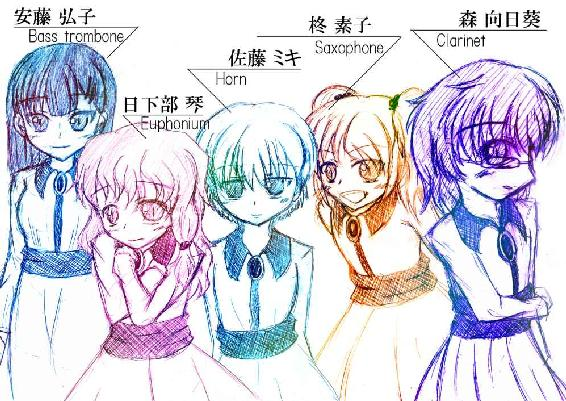
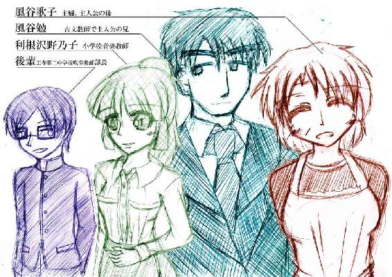

| りとる・ぶれす: ～第二幕～ | |
| 藤辰 | |
| (2018) | |


パチパチパチと、音楽室に手を叩く音が響いた。
俺は振り上げていた指揮棒を下げ、一時は無音となった音楽室に響くその音の発生源に視線を動かした。
音楽室の入り口、そこに満面の笑みを浮かべた野乃子さんが我を忘れたように手を叩いていた。
「せ、先生!!」
初めにそこに駆け寄っていったのは素子であった。ストラップで首からサックスをかけたまま、野乃子の元にたどり着くと、頬を上気させながら彼女は言う。
「先生!! どうだった!? 私、吹けたよ!?」
「ええ、素子さん上達しましたね。少し前まで音を出すのも苦労していたのに......」
「練習したかんね!!」
元気よく、本当に誇らしげに彼女は言う。
「こら素子!! せめて楽器は置いてから走ってよ」
それに追いつくように向日葵が野乃子さんの元にたどり着く。楽器をちゃんと置いてくるあたりは、素子よりも楽器経験が長い所以であろうか。
「向日葵さんも、相変わらず上手いですね」
そんな野乃子さんの言葉に、どこか誇らしげに素子が答える。
「向日葵上手いからね!! たまにあたしも教えてもらうよ!!」
「も、素子に教えられるほど上手くないよ!!」
「ふふ、二人とも変わらず仲良くやってますね」
二人の頭をなでながら、野乃子さんは教室の中央、皆が演奏をしていた場所に進んでくる。
「せ、先生!! き、聞いてたんですか!?」
「琴......。大丈夫、琴は上手いから」
俺と接する時よりも幾分かは落ち着きながら、琴は野乃子さんに尋ねた。......まあ、それでも多少テンパり気味だから、相変わらずミキがフォローしているが......。
「ええ、良い演奏でしたよ？ 琴さんもミキさんも、部活には慣れましたか？」
そういえば、素子もそうだが、彼女たちが部活に入ったのは野乃子さんが赴任してからのはずだ。
「は、はい！ な、なんとかなってる......かな」
「だいじょうぶ。ヒロ姉も、ヒマもモトも面倒見てくれてる」
ミキの答えに、野乃子さんは安堵の笑みを浮かべて......。
「......弘子さん、上手くいってるみたいですね」
「まあ、素子と琴とミキ。三人も誘っちゃった身としては......、私が皆をまとめるわ。......でも野乃子先生最近忙しそうだけど......何かあるの？」
「ごめんなさいね、なかなか来れなくて......。でもみんなが部活しっかりやってくれているから、安心しています。盛り上がってきてるって、評判ですよ？ ......私も鼻が高いです」
「......そっか。それなら良かったわ、野乃子先生」
そう言えば、野乃子さんの立場が危ういのを知って、吹奏楽部を盛り上げようとした子がいるって聞いてたが......。この感じ、弘子の事なのかもしれない。年長で行動力もある彼女なら、そういう事をしてもおかしくは無い。
それはそうと......俺は感心する。
野乃子さんは慕われている。本当に、教え子の皆から慕われていた。
わいのわいの彼女の周りに集まった女の子たちは、口々に近々の状況を話す。今までここに来れなかった彼女に対して、伝えたいことが溢れてきているのだろう。それはなかなか止まらない。
ふと、チョイチョイと服の裾が引っ張られるのを感じた。
「ん？ なんだ太郎か。......君はあの場に行かなくていいのか？」
そんな俺の問いかけに、彼は首を横に振る。
「何？ 言いたいことはみんなが言ってくれている？ ハハッ、そうみたいだな。終わりそうもない」
少し離れたところから、俺と太郎は彼女たちの様子をうかがう。本当に、会話がとどまることを知らない様子であった。
「......しかし、野乃子さ......先生、慕われているんだな」
その言葉に、太郎は深く頷く。
「ん？ 何々？ ......この部活を存続させてくれた先生だし、新しく入ってきてくれた子にも良く気をかけてくれるから？ ......なるほど。弘子や向日葵にしてみれば恩人で、素子やミキや琴にしてみれば受け入れてくれた人なのか」
それに、俺は野乃子さんの本音を知っている。あの時居酒屋で、教え子たちへの想いを俺は聞いている。
あれだけ想えば......そりゃあ信頼もされるのかもしれない。
普段来られないことに対して、みんな怒りでは無く心配をしている。たまに来た時には、居なかった時の話を伝えようとする。
......でも、野乃子さんは今、非常に微妙な立場にある。部活に顔を出す時間すら、嫌がらせで奪われているのだとも聞く。
それでもそれを悟られない様に、彼女は懸命に教え子たちの前では『先生』の顔をしていた。
ああ、ならば俺がやらなきゃいけないことは明確だ。何としても、この子たちに音楽を教えないといけない。
だって、こんな仲良い先生と生徒を見せつけられたら......守りたくなるじゃないか。
なんとしても、彼女たちの音楽に、野乃子さんもずっと関わってほしいと、俺は心から願って......。
新たに気を引き締めることとなった。
野乃子さんが仕事の都合で慌ただしく戻って行き、一度合奏も終わったことだから、とりあえず一人ひとりに指導することにした。
なんせ五人はまだまだバラバラだ。このまま合奏を続けても、各々が弱点を克服していかなければ合うモノも合わない。
ここは音楽準備室。良く教師とかが授業の合間に居る部屋なのだが、野乃子は基本職員室を使っているようで、実質物置のような部屋になっていた。
「さて、とりあえずは......向日葵だな」
なにせ、実力的には一番彼女が上手い。最年長の弘子には悪いが、向日葵の実力は中学を超えて高校生レベルに近い。本当に子どものころから練習を続けていたのだろう。
俺は準備室にイスを二つ用意した。対面で話すことになるが、彼女達と練習を始めてから、そろそろ数日がたっている。お互い緊張しないでも話せる間柄にはなってきた。
準備を済ませると、俺は音楽室に続く扉を開いて向日葵を呼んだ。
「じゃあ、まずは向日葵からだ。入ってきてくれ」
「あ、はい!!」
少し慌てたような感じで、彼女がすくっと立ちこちら向かってくる。俺はそれを確認して先に準備室に引っ込んだ。
「し、失礼します」
って、なんだか妙に緊張しているのだが......。おかしいなぁ、緊張する間柄はもう通り過ぎたと思ったのに......。
「だってせんせ、女の子としては男性と二人っきりで薄暗い部屋の中だよ？ エロいじゃん」
そんな不届きな事を言う弘子が、向日葵の後ろに付いて来ていた。
「って弘子!! なんでお前まで入って来るんだ!!」
「間違いが起きたらよく見ていたいから？」
「ま、まままま間違いって!!」
妙に慌て始める向日葵。
「......お前なぁ。冗談でもせめて『間違いが起きない様に』って言えよ」
「やだわ勿体ない」
「......で、本当は何の用なんだ？」
「この時間、何の練習してればいいかなって」
思いのほか真面目な問いかけに、言葉に詰まった。
「む......そうだな。個人練でもしてもらおうかと思っていたけど......」
とは言え、一人十分かけて指導したとしても一時間かかる。さすがに小学生としては体力や気力が持たないかもしれない。
それに、今一番気になるのは素子だ。彼女を一人にしてもたぶん上達はしない。ならばペアで練習させた方が良いだろう。
「とりあえず、弘子は素子を教えてあげてくれないか？ サックスは君の専門外だろうけど、正しい音を確認させることくらいは出来るだろう？」
「良いわよ？ さっきのキラキラ星で良いわよね？」
「ああ、それで構わない」
変に基礎練習ばかりやらせるよりは、音楽をさせたほうがモチベーションも下がらないと思う。素子のサックスはサブメロディーだったし、逆にメインの向日葵が居ない環境の方が、自分の音についても意識できるだろう。
「ミキと琴は、二人で上手く練習できているよな？ あの二人にはお互いの音を意識しながら和音を吹けるように練習させてくれるか？」
「はいはいリョーカイよ、せんせ♪」
「あ、あと」
去ろうとする弘子を引き留める。
少し慌てたような口調だったためか、彼女も少し怪訝そうな顔をした。
ふと思いついた用件だったから仕方がない。だが、こればかりは時間がある時に少しずつ、尚且つ早めに進める必要があった。
「キラキラ星ほど簡単な曲じゃなくていいからさ、各々が吹いてみたい曲を考えていてほしい。みんなに聞いといてもらえないか？」
もちろん、これはこの先の本番演奏に関する話であるのだが、彼女たちにそのことを話はしていない。変に本番を意識させるにはまだだと思うし、今はまだ吹かなくちゃいけないと感じさせるよりは音楽を楽しんでほしいのだ。
だから、弘子も深くは考えなかったのだろう。
「りょーかい。やっぱり皆が好きな曲をやったほうが良いわよね」
そんな風に彼女は解釈して、準備室を出て行った。
途端に、準備室は静かになる。
ふと、この場に残った向日葵と目が合った。
彼女は少しだけビクリとすると、わたわたと椅子の位置を調整し始めた。
不意に、さっきの弘子のセリフを思い出す。
（......間違いって、何をバカな）
だって相手は小学生だ。そういう目で見られるわけがない。
......と思うのだが、まあ確かに女の子と薄暗い部屋に居るのは事実で、向日葵とは５つほどしか年齢は離れていない訳で。
それは別に、ぜんぜん不自然なわけでは無くて......。
と、気付くとまんまと雑念が生まれていた。
そんなんだから、向日葵はいつまでたっても椅子の位置を調整し続けている。そりゃあ、彼女としてはもうどうしていいのかわからない状況であろう。
「あ、ごめんごめん。座って良いよ、さっそくはじめよう」
正気に戻る。こんな為体では今後が思いやられる。
なんせやる事が山済みなのだ。余計なことは考えないで事を進めよう。
楽器や譜面台の簡単な調整を終え、改めて俺と向日葵は向かい合った。
「ええと、じゃあ、始めようか」
「よ、よろしくお願いします!!」
向日葵は、少しばかり緊張した面持ちで頭を下げてきた。
「ああ、今日はそこまで何かする訳でも無いし、緊張しなくていいよ」
「は、はい」
とは言うものの、どんな言葉を伝えたとしても、きっと彼女は緊張を解くことは無いだろう。
少し前から感じていた事ではあるのだが、どうも彼女は俺の事をプロの奏者か何かと勘違いしている節がある。いや、ちゃんとただの高校生だということは伝えているのだが、小学生たちの中で彼女の視線だけ空気感が違う。本気でこちらの事を「先生」とか「コーチ」と認識しているようだった。
まあ、確かに同じクラリネット吹きとしたら俺の方が間違いなく上手いわけで......。他の子たちよりもより実感的に「実力の差」を感じ取ってくれているのかもしれない。......実際のところ、俺はそこまでの実力者ではない筈なのだが。
この子の為にも、そのうち何かの演奏会のビデオとかを見せてあげたほうが良いかもなとも思った。俺の演奏の幻影など見ていないで、彼女はもっとプロの演奏とかを見たほうが高い目標になり得るだろう。
そんなことを考えながら、俺は先ほどの演奏中にメモった紙に目を通す。
......のだが、そのメモに向日葵の事がほとんど書かれていない。自分で取ったメモだから、解りきった事であったが。
「んー、向日葵は。......今はそこまで指摘するところは無いんだよな」
なにせ、小学生離れしている実力者なのは変わりない。今現状で、彼女の演奏に突っ込めるほど、俺の音楽技術も高くない。
だが彼女は、俺のその評価にとても不満そうに口を開く。
「奏太さん、そんな事ない筈です。遠慮しないで指摘して欲しいです」
いやまあ、やる気があるのは良いことなのだが......。
向日葵レベルの演奏者のキラキラ星なんだ。それこそ本当のプロの講師でもない限り、何も語ることはできないよ。
「いや、音の長さもタンギングも問題なく出来ていた。音程もブレがあるとは言え現段階では十分だし、メロディーの抑揚もちゃんとあったと思う」
クラリネットのソロメロディーならば、全く問題は無いのだ。
「で、でも。それでも何かないのですか？」
それでも彼女は、なおも食い下がる。真面目と言うか......音楽に対して真摯な子なのだ。そこは俺も数日一緒に音楽をやってみて理解できていた。
「そうだなぁ......。まあ、あえて言うのなら」
「あえて言うのなら!?」
......本当は、少し難しい話なので、ここで出すつもりは無かったのだが。......彼女も課題が無いと気持ち悪いのだろう。ならばあえて伝えよう。
「もう少し、下手に吹いていいよ？」
「......は？」
一瞬、彼女は呆気にとられたような表情をした。
いや、俺も正直少し言葉を謝ったと気付く。
「ええとな。言葉通りじゃなくてさ......。なんていうか、向日葵は今、すごく完璧な演奏なんだよ」
「で、ですがそんなはずは......」
「とりあえず、それだけは飲み込んでくれ。話が進まない」
「む......わかりました」
「で、君だけ飛びぬけて上手すぎて、実は周りよりも目立ってしまってるんだ」
「......は、はぁ。ですが、だからと言って手を抜いて下手に吹くと言うのは......」
「いやごめん。それは言葉のあやだ。忘れてくれ」
「はい」
「だけど、実際はそれに近いことをする必要があってさ。......今君は完璧な演奏をしようと必死だろう？」
「楽器を吹くのはそういう事だと思ってます」
「ああ、それで間違いはない。間違いは無いんだが......まだ今はそこまで自分の実力を突き詰めなくていい。そんなことよりも、周囲の演奏に耳を傾けて、周囲に合わせるように演奏してほしい」
「ええと......。つまりやっぱり周りの実力に合わせて、少し手を抜いて......」
「だから少し違くて......」
しかし、上手い伝え方がなかなか出てこない。
同時に、彼女の弱点に近いモノが解ってきた気がする。
彼女は周りに合わせる事が、きっと実は一番苦手なのかもしれない。
向日葵は上手い。その上手さは小さいころから続けている自主訓練によるものだろうが......きっと今までは、周囲と合わせることと言う機会があまりなかっただろう。
だが考えてみると、周りと合わせるというのはいささか抽象的な話なのかもしれない。ならばもう少、具体的に話さなければならない。
先ほどの演奏で気になった点と照らし合わせて......、もうとりあえずは全部をどうにかするのではなく......そうだ、ひとつお願いしてみよう。
「そうだな、まず音量を調節してみよう。さっきの演奏は他の子達が不完全だって理由もあるけれど、全体の音量としても向日葵のメロディーは十分過ぎる。もう少し隣の音を聞いて演奏する事を意識してご覧？」
「で、でも。あまり意識を色んな所にふわふわさせても、自分の演奏が疎かになっちゃうんじゃ......」
なるほど、ここにきて本当に彼女の弱点が明白になった。先ほど睨んだ通り、やはり彼女は周囲の音を聞きながら音を吹くのに慣れていない。
「いや、向日葵。吹奏楽の合奏はむしろ周りの音を聞くことだ。周りの音を尊重する事を忘れていると、自分の音だけを主張する事に成っちゃうよ」
いろいろと手さぐりの話になってはしまったが、その伝え方で彼女もハッとなるところがあったようだ。
「そ、そうですね。確かにそうかもしれません」
「今は周りの実力も発展段階だから君も思うところがあるかもしれないけど......。せっかく仲間がいるんだから、そこは意識していこう」
「わ、分かりました!! 教えてくれてありがとうございます!!」
ペコリペコリと頭を下げる向日葵。なんにせよ、彼女に伝えることと課題があって良かった。
「奏太コーチ!! よろしくお願いよ!!」
元気よく、素子の声は小さな準備室に響き渡った。
「お、おう。よろしくな」
とりあえず俺はメモを見て、素子に伝えなくてはならない事を確認する。
とは言っても、彼女についてもそこまで多くの事がメモに書いていない。ただし、それは向日葵とは逆の理由であるのだが。
「素子は......やっぱり基礎的な練習だな」
何せ周囲よりも経験が浅いし、出来ないのは当たり前ともいえる。そればかりは、経験者が付きっ切りでコツを教えつつ、人よりも多く練習するしかないのだが......。
「い、一応弘子に見てもらって、音は間違わないで吹けるようになったよ!!」
「ん、そうなのか？ じゃあとりあえずやってみようか」
「オッケー!! 任せて」
俺が太鼓のばちで机を叩き、テンポを作り出す。
「はい、１、２、３、ハイ」
キラキラ星の、サブメロディーが鳴り響く。
ところどころメロディーから外れるため、メインメロディーよりも難しいのかもしれないが、彼女の為に指が難しくない高さの音で譜面を作っている。吹きにくいことは無い筈だ。
そして十二小節吹き終えると、彼女はプハァと息を大きく吐いた。まだまだ息遣いに無駄がある証拠だ。必要な時に足りなく、こうやって終わる瞬間に余ってしまうのだ。
「確かに、指使いと音は間違えなかったな」
先ほどの合奏では細かなミスも目立った。だが、今は宣言通りに音を間違わずに鳴らすことが出来た。
「えへへ。弘子の教え方が上手いからだよ」
「そうなのか」
彼女は金管。しかもスライド楽器と言う特殊な形をしたトロンボーンである。木管族の指使いに精通しているとは思えないのだが......。
「ゆっくりと間違いを指摘してくれるし、教え方が優しいからさ」
「成るほど......」
そこはさすが先輩と言ったところか。
しかし、同時に素子も呑み込みが悪いわけでは無いのだろう。上手く教えれば、上達は早いはずだ。
「とりあえず、今の曲については音の間違いが減ったから、あとはスムーズに指を動かすことが出来れば良いと思うけど......あと気になっているところはあるかい？」
実際は彼女の音はまだまだ雑だし、音と音の繋がりもブツブツと切れてしまう。改善点は多い。
だが、彼女は少しばかり考えると、俺に意外な事を訪ねてきた。
「えとね、音は間違えなくなった筈なんだけど、なんかまだ音がずれている気がするんだ。微妙に低いこともあったり高いこともあったり......。どうすればいいのかな」
これには正直驚いた。
調律を施せる弦楽器や鍵盤楽器などと違い、管楽器の性質上息遣い等で音が微妙にずれてしまう。機械などで測れば解る事なのだが、これがずれていると、他の楽器と一緒に鳴らした時にハウリングのようなウワンウワンとした気持ち悪い響きを起こす。音をぴったりと合わせるというのは、管楽器は特に難しい。
このハウリングのような気持ち悪い音のズレは、素人でも二本以上楽器があれば簡単に気付くことができる。
「ええと、素子。それは今吹いた時もそう感じたのか？」
「うん。特にドとファの音が低かったよ？ ......私間違っている？」
だが、比較対象が無い状況で、一本の楽器の音でそのズレを感じるということは、それはいわゆる『絶対音感』の持ち主と言う事である。
それは生まれついての才能だ。訓練して手に入れる事はできるかもしれないが、初めから持っていればやはり周りよりも有利に上達することができる。
それが出来るというのなら、素子の練習方法は決まったようなものだった。
「素子、少し飽きやすい練習かもしれないが、俺の言うとおりにしばらく基礎練習をしてみてくれ」
彼女は、まずは音の移り変わりと音程を丁寧に練習してもらう必要がある。
ロングトーンでひたすらに音階を吹かせて、さらに自分で納得のいく音程を出せるまで同じ音を鳴らさせる。
「素子が違和感を感じない音を出せるようになったら、必ず皆との演奏に欠かせないものになる。だからまずは、自分が満足のいく音程を出せるように頑張ってみてくれ」
「私が......みんなの役に立てるの？」
「ああ、間違いない」
言うならばコンサートマスターの立ち位置だ。ズレの無い音を彼女が吹けるようになれば、将来的に周囲が彼女の音を基準に合わせることができるようになる。合奏としてここまで心強い人材はいない。
俺の答えに、彼女はとてもうれしそうな表情をする。
「わ、わかったよ!! やってみるよ!!」
この部屋に入ってきた時よりもさらに、彼女は元気よく返事をした。
「......（ペコリ）」
「お、おう。よろしく」
なにせ騒がしかった素子の後である。こうも静かに入ってくると若干の戸惑いを感じずにはいられなかった。
ミキはホルンを抱えながらちょこんと席に座った。別に小柄な方ではないのだろうが、そもそもが小学四年生なのだ。ホルンとて両手でしっかりと抱えるようなサイズなのだ。
「さてと......とりあえずさっきのキラキラ星を吹いてもらおうか」
「わかった......」
そう言うと、彼女はゆっくりと音を倣いはじめた。
（......やっぱりそうか）
そう......。演奏すると言うよりは、あくまで楽譜をそのまま倣う感じ。間違いなく、寸分狂わない模範的な演奏。......いや、模範的であってそうでは無いともいえる。
何とも、彼女はそれを淡々と続けるのだ。
悪くは無いのだ。むしろ、集団で演奏するときに楽譜通りに吹くのは一番必要なこと。
だけど同時にホルンと言うパートは、もっと音楽に広さや厚みを与えるパート。この楽器が吠えることによって、壮大さや広大さが表現される事になる難しい楽器だ。
「......今は、まだ問題になるところは無いな。基礎練習もしっかりやれているみたいだし、音も安定する」
実際のところ、逆に今彼女に教えることは少ない。彼女が表現豊かに吹くのはきっともう少し先の話であり、むしろ今の管楽器が五本しかない状況は、主張よりも協調性だ。
だが、同時に今これを続けていても、面白さに出会うのももう少し先の話になりかねない。
小学生が、そんな先を待てるだろうか。......もう少し早めにそう言うのを教えてあげたほうが良いのではないだろうか。
だって今彼女は......こんなに淡々と楽器を吹いているだけなのだから。
「なあ、ミキはなんでホルンを選んだのかい？」
気付くと、俺はそんな質問をしていた。
彼女はホルンに行きつく前に、いくつもの楽器にチャレンジしたという。どれもそこそこ音が出せたようだ。
では、彼女が何故この楽器を選んだのか......。
彼女はたった一言で返してきた。
「金管で......一番難しいって聞いたから」
シンプルな答えだった。
「へ、へえ。......チャレンジしてみたってこと？」
「難しい方が楽しめるかなって......。でも、普通に吹けちゃう」
確かにホルンは他の金管楽器よりもマウスピースの大きさが小さく、それでいて管が長く息の量は必要。故に音を安定させるのが難しい楽器である。
それを安定して音を出すことが彼女は出来ている。そう言う面では果てしなく彼女は凄い。これが二か月の小学四年生なのかと驚きを隠せない。
だけど......。
「いや、それはまだまだ早計だよ。君はまだまだ、吹けていない」
多少、挑発的な言い方になってしまったかもしれない。もしかしたら彼女は食って掛かってくるかもしれない。
だが、以外にも彼女は不思議そうな表情でこちらを見てきた
「......そうなの？」
本当に不思議そうな顔で、俺の顔を覗き込んでくる。
「例えば......どのあたり？」
とても興味深く俺に問いかけてくる。
これは、生半可なことは言えない。
「ええと......けっこう口で言うのは簡単で難しいんだけどさ」
一言で表せば、彼女の音は安定しているが『ホルンの音』をしていない。
もっと壮大で、自由なのがホルンの音。だがそれを口や文字で表現するのはとても難しい。
これはもう、百聞は一見にしかずと言う事か。彼女には彼女の音とホルンの音の違いを聞いてもらったほうが良い。
「ミキはＣＤラジカセ持ってる？」
彼女は首を横に振る。
最近はパソコンやスマホに音を取り込むだけの人が増えている。わざわざＣＤの再生機材を家に置いていることも無いのだろう。
だが、彼女は意外な事を言う。
「テープなら......たぶんある」
「へ？ テープって、テープレコーダーとかのあれ？」
彼女はコクリと頷く。
「スマホとかは？ そう言うので聞けないの？」
「スマホ......持ってない」
「あ、そうなのか。ごめんごめん」
如何に小学生が持っている時代とはいえ、持たない家系もあるのだろう。
しかし、テープともなると......。兄に頼めばどうにかしてくれるだろうか。
「とりあえずさ、次までにホルンの曲のテープを貸してあげるからさ。それと自分の音を聞比べてみてくれるかい？」
小学生には難しいかもしれない。だけど、この子は二か月でここまで楽器を吹けるようになった子だ。あるいは、器用に音楽を聴き分けて、さらなる自分の目標を作れるかもしれない。
「とりあえず、今日はまだ今までと同じ練習を続けてくれればいいよ。吹けてないと言ったけど......それでもミキは音を正しく出している。今の練習が間違いってわけでもないから」
彼女が必要なのは理想とする音だ。それを知らないから、今の自分を安定させて音を間違わない様に、そんなきっちりとし過ぎた音楽になっている。
重ねて言うがそれは間違いじゃない。だけど、もっと音楽は壮大で自由なものなのだ。彼女にはそれに早い段階で気付いてほしかった。
投げやりな指導になってしまったかもしれない。彼女は納得いかないで不満が残ったかもしれない。そんな懸念が残る。
だけど彼女のあまり抑揚のない顔を見てみると、気のせいか頬が高揚している様に感じた。
「......まだ、楽しめるんだ」
そんなことをぽつりとつぶやくと、彼女はぺこりと俺に頭を下げた。
「あ、ああああああのおののの、よ、よろろろろくおねがいいしますっ」
「あ、うん。大丈夫だよ、そんなに緊張しなくて」
「わ、わかかかりましたああ」
ガッションというような効果音が聞こえてきそうな、そんな挙動で椅子に座る琴。向日葵も緊張していたが、それとは比べ物にならない緊張の仕方である。そのくせか細い声なものだから、彼女の必死さが嫌でも伝わってくる。
とりあえず、まずは落ち着いてもらわないと困る。
「ゆっくり深呼吸して、まずは息を整えようか」
「は、はい」
彼女が落ち着きを取り戻す間に、俺は先ほどの合奏の様子を思い出す。
彼女の音は、お世辞にも『聴こえる』とは言い難い。
合奏中かなり苦労して音を出そうとしている彼女の様子は、俺の目から見ても明らかであった。
何度か彼女の音を聞いたことはあるし、全く出ていないわけでは無いのだろうとは思うのだが......。
少しばかり時間を使って彼女を落ち着かせた後、ゆっくりと彼女に音を出させた。
「ゆっくりで良いからね、君のペースで吹いてくれていいよ」
彼女はコクリと頷くと、ゆっくりと彼女のパートを吹いていく。
（......やっぱり思った通りか）
彼女の音はすごく綺麗だ。
丁寧な旋律は、ミキのそれとは異質で、まさに『奏でる』と言った音質だ。ひとつの音にも表情があって、どこか自由に歌うに近い感じがした。だが音を外しているわけでは無い。きっちりとしっかりと、外してはならないところは間違いなく吹ききっている。
綺麗さで言えば、向日葵以上かもしれない。向日葵も大したものだが、どこか余裕が無い吹き方をすることも多い。琴はそれとも違って、自分が吹ける音を自分の吹けるように吹こうとしている。落ち着けば、丁寧さは誰よりも勝るだろう。
だが、欠点をあげるとすれば......。
（音が小さいんだよなぁ）
落ち着いている状況で、そこまで音量が出ていない。さらにこれで緊張すると、さらにか細い音になってしまうのだ。
折角の技術も、相手に聞こえないのなら全く意味が無い。
一通り吹き終わった彼女に対して、掛ける言葉を考える。
ここは『音が小さい』と一言で済ませるのは簡単だが、おそらく彼女はそんなこと百も承知だ。今更伝える事でもないのだろう。
しかし、そのほかに注意すべき点は今のところあまりない。音程も悪くないし、音もちゃんとユーフォニウムの音を出している。
だとすると、今は注意では無くて、他の話題をふって見るのが良いのかもしれない。
「ええと、琴は楽器ってどのくらいやってるんだい？」
彼女の家系は音楽家で、父親がユーフォニウム奏者で、母親がトランペット奏者あるのだという。世界的に有名な演奏家らしいが......、あまり演奏者に興味を持ったことは無いので、俺も詳しくは知らない。だけどそんな境遇ならば、それなりの経験があるのかも知れないが......。
「ええと......五年くらいですぅ」
「幼稚園のころから触っているのか......」
「えと......と言っても、あのころは大きめのトランペットでした」
「成るほど、トランペットか」
そもそもユーフォニウムという楽器は低音楽器と言う事もあり、それなりの大きさをしている。幼児では抱えられない。チューバほどの大きさは無いにしても、小学四年生の女の子が抱えると、その身体の半分は隠れてしまう。
もっと小さい時は、他の楽器を触っていてもおかしくないし、そもそも金管楽器の指使いは殆どが同じ。小さいころは息の量も体力も無いに等しいのだ。トランペットを持っていたとしても不思議ではない。......まあ、トランペットもまた、幼児が吹くにはかなり無理がある楽器だけど。
となると、もしかしたら琴はあれができるかもしれない。
「琴、今からこの譜面を吹けるかい？」
そう言って、俺はいちまいの譜面を彼女に渡した。
「きらきら星のメロディー部分なんだけど......」
「えと......やってみますぅ」
譜面を受け取るや否や、彼女は楽器を構える。
そして、五秒くらい楽譜を見た後、大きく息を吸った。
流れるメロディ。それはやはり先ほどと同じ丁寧な旋律であって......。
（ああ、思った通りだ）
譜面を渡してすぐに吹けることは大したことでは無い。この程度の楽譜なら、もう彼女は吹けるのだろう。
しかし、問題はそこではないのだ。彼女の丁寧な奏法は、間違いなくソロのメロディを引き立てる。
確かに小さな音ではあるが、この丁寧さは聞いていて全く不快感を感じない。むしろ安らぎと言うか、風の音、水のせせらぎに近い何かだ。
十分わかった。向日葵が技術や演奏を意識して練習してきたのに相対し、琴はもっと音を丁寧に綺麗に自分の出来る範囲を熟してきたのだ。まったく違うタイプだが、ここにも小学生離れした才能の持ち主が居た。
ただ一言いうのなら、その才能を上手く使え切れていないようだった。
それは物理的な話。ユーフォニウムと言う楽器は、小柄な彼女にはまだまだ早い楽器だったのだ。もっと体が出来上がってから触ったほうが良い楽器。今はまだ、その小さな体では大した音が出せないのだ。
「良い音を出すね。......お父さんがユーフォニウム奏者なんだよね」
ふと、そんな風に彼女に聞いてしまった。
だが、彼女はその質問に表情を曇らせる。
「そ、そうなんです。......お父さんはカッコよくて......」
父を褒め称える言葉。それに嘘は無いのかもしれないが......、彼女が心からそれを発言したとは思えなかった。
俺はもう知っている。心から自分の父を称える少女の顔を。向日葵は、確かにそう言った表情をしながら、俺に父親の話をしてくれた。
だけど、琴の表情はそうではなく。......どこか萎縮しているというか、申し訳なさそうと言うか......。
そう言えば、こんな経験者の子が、今年からここに入ったというのはどういう事なのだろうか。彼女の境遇から考えれば団体に入ることもできるだろうし、こんな小さな部活を演奏の場として選ぶ必要はないと思う。......いやまあ、それは向日葵にも言える事なのだが。だけど、琴の両親は世界的な演奏者だ。もっと音楽的な英才教育を施されても不思議では無い筈だが。
と、そこまで考えて、なんとなく俺は察した。
ああそうか、そう言うのが出来なかったから、彼女は申し訳なさそうにしているのかな。
「ユーフォニウムを吹いているのは、お父さんへの憧れ？」
踏み込んでいいか解らない。だけど、こんな悲しそうな表情をする子も放っては置けない。
「......す、少し......違うかもしれないです」
それは、本人も否定したくは無いような、あいまいな答え方だった。
「そっか」
だけど今その楽器を抱えているという事は、きっと思うところがあるのだ。
「大丈夫だよ。琴の音はすごく綺麗だ。今は小さい音しか出せなくても、将来きっと立派な音を出せるようになる。だから君は正しいよ、今できる範囲の事を、すごく丁寧にやってるからそう言う綺麗な音が出るのだからさ」
「わ、私の音、綺麗ですか？」
「うん、それは間違いないよ。ただ、やっぱり今は君の身体が楽器に負けちゃうんだと思う」
「そ、そうですよね。......奏太先生、私どうすれば良いのでしょうか？」
「うーん......」
ぶっちゃけ、案はいくつかある。それに今は一か月後の演奏会も考えると、彼女のポリシーを侵害してでもお願いしたいこともある。
だけど、そんなこと俺の口から提案できない。音楽は楽しめなくてはいけない。妥協したり、信念を曲げたりして吹いたら、心の底から楽しめることなどなくなってしまう。
だから、俺が求められるのは、彼女が何かに気づき、彼女が何かを選択することを躊躇わない事を祈るのみだ。
だけど、彼女は『どうすれば良いか』と尋ねてきた。だったら、俺もせめて彼女が選択できるようにいくつか使えることくらいは許されるのだろうか。
「そ、奏太先生、お、お願いです。教えてください」
ああでも、やっぱりこの子は思った通りだ。あんなしっかりとした綺麗な音楽を奏でられるのだ。心の奥にはしっかりとした信念があるのだ。
この部活で演奏する為に、どうあるべきかを俺に問いかけてきている。
だったら、生半可な答えは出来ない。彼女の自由を奪わない範囲で、俺は彼女に答えるしかない。
「音を出すには体力だ。そして肺活量。これは、やっぱり演奏の練習よりもトレーニングでしか培われないだろうね」
「ランニングとかですかぁ」
「だけど、これだって一朝一夕では手に入れられないもの。焦らなくても良いから少しずつやっていくしかない。ユーフォニウムを吹くのなら、今後はそう言う面での努力も必要になるだろうね」
そう、あくまで今すぐにユーフォニウムを大きな音で吹くのは難しいだろう。中長期の努力が必要になる。
だけど、もちろんこれではすぐには何も解決しなくて......。それはつまり、彼女の悩みも、俺の抱えている問題にもすぐに対応できる解決方法では無くて......。
「奏太先生。......もしすぐにみんなと演奏する方法があるとしたら......それはなんですかぁ？」
ああ、でもきっとこの子もそれには気付いているのだろう。この質問は、彼女が頭の中で考えている答えを誰かに、『それが正しい』と言ってほしいがための質問なのだ。
だけど、それを俺が決めたらだめだ。今の彼女は、ユーフォニウムを持っていて、それを吹くための方法を探すのがベストなのだ。
俺はゆっくりと首を横に振り......。
「君の息の量でユーフォニウムの十分な音量を出すのは困難だ。いきなりその楽器を吹くのはやっぱり難しい。......ユーフォニウムを吹くのなら、時間をかけて焦らないことだと思うよ」
それは彼女の心の中の答えを否定はしていない。だけど、彼女が欲しかった答えでは無いのだろう。
その答えに、彼女は大きくため息をつく。
「そう......ですよねぇ。慌てちゃだめなんですよねぇ」
その反面更に、彼女の頭の中に答えは明白化してしまったのだろう。『今はまだ、ユーフォニウムを吹ける身体では無い』のだ。
だけど、そこから何かを選択するのは彼女自身だ。だから俺は最後にこう付け加える。
「でも、どの道を選んでも、きっと君はユーフォニウムが好きなんだと思し......さらにいえば音楽は好きなままだと思うよ？ 今は君が、一番音楽を楽しめる方法を探してね」
俺の言葉に、彼女はコクリと頷いた。
「で、センセどの子が好みなの？」
入ってきて一言目がそれだった。
俺はため息をつきながら、彼女にイスを差し出す。
「そう言うのは良いから、とりあえず座ってくれ」
「へいへーい」
それでも笑顔で、バストロンボーンを抱えた弘子は俺の目の前に座る。
座った後の彼女は、途端に表情が変わる。楽器をしっかりと構え、空気を入れスライドの確認をする。
彼女は一瞬で楽器を吹く人の表情になった。小学生とは言え、すでに三年もこの部活に居るのだ。そう言ったスイッチは他の子たちよりも鋭いのだ。
「で、センセ。とりあえずキラキラ星を吹けばいいの？」
彼女が最後と言う事もあり、前の四人からはどんな練習をしたかを聞いているのかもしれない。
だが、俺は首を横に振った。
「いや、正直弘子の実力はさっきの演奏を聴いて解っているからさ。今更楽器を吹かせることはしないよ」
周りの音をちゃんと聞いてるし、目立ったミスもない。ベースを任される低音と言う事もあり、みんなを支えるべく、出るところはちゃんと出て、周りが走りそうになったらさり気なくテンポを遅くする。まあ、ポジションだけが理由じゃなくて、やはり年長というのが一番彼女の意識に繋がっているのかもしれないが......。
「あら残念。私もセンセの個人レッスン受けたかったわぁ」
流し目でそんなことを言ってくる。色っぽいつもりなのだろうか。あと三年くらい経てば解らないかもしれないが......。
相手にするまでもなく、俺は彼女の前に座る。
「さっそくだけど......やりたい音楽をみんなに聞いてくれたかい？」
一か月後の事はともかく、まずはみんながどんな音楽が好きか、そのあたりを知りたい。
ただ俺から聞くと、萎縮したり変に気取った音楽を出してきたりと、本当にやりたい曲がわからない恐れもあった。
それならば、他のメンバーに信頼されている弘子にお願いすればそう言った心配もないだろう。
弘子は思い出すようなしぐさをしながら。
「んー、そうねぇ。急だったからみんなも戸惑っていたけど......。とりあえず自由に言わせたらこんな感じだったわね」
メモ用紙を手渡された。以外にも丁寧な彼女の字で、皆の演奏したい曲が書かれている。
「ふむふむ......。なるほど」
どれも、割とメジャーなポップスかアニソン。おおむね誰でも聞いたことのあるような楽曲だ。
（って、向日葵は何と言うか......らしいなぁ）
一人だけクラシックを挙げている。まあ、周りを気にしてか、『魔笛』ほどの難しい曲は出していないのだが......。
「で、弘子。君は随分吹奏楽曲ばかりだなぁ」
「そりゃあやりたい曲って言ったら、私は吹奏楽だからね。当たり前よ」
そこには、吹奏楽に携わらなければ解らないであろう曲名が連なっていた。
「ていうかガチガチの吹奏楽曲じゃあ、この人数で出来るわけないじゃないか」
「そりゃあわかってるけどさ。別に吹きたいって言うのは自由でしょう？」
まあ、確かに。俺は吹いてみたい曲をあげろと言った気もする。
「実は私って初めて吹いた曲がその曲でさ。また吹いてみたいなって思っていて」
「ん？ ああそうか。弘子が入った時は、まだ上級生も居たんだな」
「その時でさえ全体で20人くらいだけどね。それなりに合奏出来たよ」
彼女にとって思い出の曲らしい。同時に、彼女がその曲から入れたのはとても幸運な事だろう。
一概にそうとは言えないが、やはり吹奏楽をやるのなら吹奏楽の曲をやったほうが楽しい。今の人数ではアンサンブルは出来ても、吹奏楽としての楽曲は出来ないだろう。
と、ここでまた一つ課題が出来てしまった。
出来ることならば彼女たちに吹奏楽の経験を、早い段階でさせてあげたい。
「この曲なら俺も去年やったよ。良い曲だよな」
「だよね!! 今は無理でもいつか、皆で出来ればなって思ってるんだ」
「そうなると良いなぁ」
なんにせよ、そう言う夢をかなえるということは、今以上にこの吹奏楽部を盛り上げなければならない。
あの曲が出来るくらい大きければ、小学生の団体としては十分だろう。
そんなキラキラした表情で話す彼女であったが、不意にその表情が曇る。
「......でもさ、私今年で卒業だから、きっとみんなとは吹けないんだよね。......あんな楽しい時間を、今の皆と一緒には過ごせないんだよね」
ふと、彼女がそんなことを口にした。
......そうだ。彼女は六年生。仮に今年あと数名入ってきたとしても、そんな大きな演奏は出来ない。
きっと彼女の願いは叶わない。今のままでは、到底......。
もちろん、そんな吹奏楽曲に拘らなくったって、今のメンバーで音楽は出来る。今の規模に沿った演奏はいくらでもできる。
でもそういう事じゃないのだろう。ここまで話してみてわかる。きっとこの子は、今のメンバーの中では一番『吹奏楽』を愛している。クラリネット自体を愛している向日葵とも違う......、『吹奏楽』への愛。
だから、こういった吹奏楽曲をやりたいと言うのだろう。
同時に、その悩みは今のメンバーの中では彼女しか持たないものであり、理解されないものだろう。だって他のメンバーは、『吹奏楽』を知らない。経験したことが無いのだから仕方がない。
......不意に、俺が吹奏楽の素晴らしさを周りに伝えきれなかった少し前の日々を思い出す。......彼女は部活を作れなかった俺と似ている。自分の中で伝えたかったことを抱えつつ、それを伝える方法が見つからないのだ。
高校で仲間と共に楽器を吹けなかった俺は......心の底から共感できる。
だからこそ......何とかしたい。
ああ本当に、次から次に問題が見つかる。
「そうだな、吹奏楽を知らないのは、少し残念だよな」
「......センセ？」
「少し考えさせてくれ。可能か不可能かではなくてさ、こういう曲をみんなが経験できるとしたら、それは絶対に今後の糧になるからさ」
残り一か月と少ししかない中で、どのくらい時間をとれるかと言うのは測りかねるが。
それでもこれはやっておいた方が良い課題だ。働きかけてみる価値はある。
「叶えられるか解らないけど、弘子の願い、少しでも何とかしてみるよ」
まったく、随分な大口をたたいてしまった。まだ出来るかどうか怪しいというのに。
だが一瞬で花が咲いたように綻ぶその表情を見たら、引き返せないだろう。
「期待しているからね？ センセ」
練習を終えて、俺は自転車をこぎながら道を急ぐ。
「なんだか、本当にやる事多くなってきた」
だが、課題が多い現状は致し方が無い。むしろそれが解った今日は何と有意義だったか。
「まずは、全員の実力の底上げだな」
これについては、毎日の練習あるのみである。
だけど、それだけでは間に合わない。と言うよりは彼女たちの集中力も続かないだろう。
弘子には気付かされた。彼女たちにはもっと、吹奏楽の楽しさを伝えなくてはいけない。今彼女たちがやっている事の果てに、どんな楽しい世界があるのかは、前もって教えておいた方が良い。
「そうだ。......もっと『吹奏楽』に興味を持ってもらわないと」
ここのところ、ずっと基礎練習ばかりさせていた。だから素子もキラキラ星とは言え、あんなに楽しそうに演奏をしたのだ。
だけど、周りの子たちはどうだっただろうか。
向日葵や弘子には味気なかっただろう。
ミキもホルンの良さを解るにはまだまだほど遠い。
逆に琴は必死に音を出していたのかもしれないが、ならなおさらもっと大きな合奏で今の現状を理解してほしい。
そうだ。さらに彼女たちに必要なのは、きっと経験と......先のビジョンだ。
俺はそんなことを考えながら、自転車を漕ぐ力を強めた。
この時間ならば、まだ彼らなら練習をしているだろう。直接交渉したほうが良いだろうし、......たまには顔を出さないといけない気もする。
そもそも、今もし俺が頼れる所があるとすれば、一つしかない。
そう。俺が去年まで演奏していた、母校へ。
王寺第二中学校へ。
その日、俺は練習の終わりに彼女たちにあることを訪ねた。
「皆、今週の土曜日は休みだと思うけど、時間空けられるかい？」
各々が楽器の整備をしながら、俺の方を向いてくる。皆、今何を尋ねられたか考えつつ、自分の予定が空いているのかを思い出しながら、そもそも何故そんな事を訪ねられたのかに首をかしげる様子だった。
そんな中、やはりと言うか最年長の弘子が返してきた。
「えー？ なになにセンセ？ デートのお誘いかしら？ 私ならいつでも構わないわよ？」
などと言うモノだから、なぜか音楽室が一気に色めき立つ。
「ちょ、まじ!? 良いよ行こう!! どこへ連れて行ってくれるの!?」
「ちょっと、何言ってるのよ素子!! 奏太さんに限ってそんなお誘いしてくるわけが!!」
「あ、あわわわわわわあのあの!! ひ、一人だと緊張しちゃうから......その!! み、ミキちゃああん!!」
「落ち着いて琴。......私が居れば完璧なデートのサポートを」
俺はため息をつきながら、
「......ミキ。君もなんだかんだでぜんぜん落ち着いてないぞ」
とりあえず、一番最後に聞こえたミキの発言に突っ込んだ。
しかしまあ、そこは小学生だな。どこかに遊びに行けると思ったら、すぐに食いついてくる。まだまだ子供と言うか、遊びたい盛りなのだろう。
「ご期待に沿えずに悪いが、別に遊びに行く話じゃ無いぞ？」
俺のそんな回答に、四人は大きなため息をつき着席する。
「ていうか、弘子も別にそんな話じゃないことくらいは解ってるんだろう？ ......騒ぎになるような発言は辞めてくれよ」
「てへ♪ センセが人気者だから悪いのよ」
まったく、なんで俺が悪くなるのか理解に苦しむところだが......。
「じゃあ、奏太コーチはいったい土曜日に何をしようって言うんよ」
素子が若干ブスッとした口調で問いかけてきた。
ああ、そうだった。それを話さなければ始まらない。
「いや、俺の母校の中学の後輩達と、合同練習をしてみようかなってな」
彼女たちは一瞬動きを止めた。おそらく、今度の今度こそ、こちらの言っていることを理解しようと頭をフル回転させているのだろう。
そして今度もやはり、第一声を上げるのは先ほどと同じくして弘子だった。
「センセ......それって......」
ああ、そうか。まあ三年もやっていれば、なんとなく人が集まればどんな事が出来るか、彼女も想像できるのだろう。
その分、他の四人は未だピンと来ていない様子だ。
「なに、あまり機会もないだろうから、少し大人数の中で合奏を経験してほしいと思ってさ」
今の環境では『合奏』の経験を得ることができない。やはり吹奏楽と言うのは人数がそろってなんぼである。
先日の弘子の願いが俺を動かしたのだが、別にそれだけなら他に方法はあるし、ここまで急いでその望みをかなえてあげる必要はないかもしれない。
だけど反面、彼女の言う音楽の楽しさは、俺が先日まで少しばかり忘れていた音楽の楽しさに通ずるものがあった。
だから出来るだけ早くに、皆に味合わせてあげたかった。
もしそれが実現するのなら、きっと彼女たちはもっと音楽の楽しさを理解するだろうから......。
「皆がもし参加できるのなら土曜日の朝から、俺の中学の練習に一日だけ参加させて貰えるんだ。その日の終わりには、一曲吹奏楽の曲を皆で合奏できる。......きっと、いい経験になる。もし参加するのなら、明日からはその曲の練習をしようと思う」
今日は月曜日。しかも今日は終わってしまうからあと四日間。全員が全部吹けるようになるとは思えないが......。重要なのはそこじゃない。彼女たちの音が、今以上の規模の合奏に組み込まれることに意味があるのだ。
「どうかな......？」
みんな、戸惑っていた。急にこんな話を振られても、どうすれば良いかなんて小学生には即決できないだろう。ましてや中学生なんて、たぶん彼女たちにとっては未知の存在だ。ある程度の恐れにも似た感情もあるだろう。
それに皆にも予定はあるだろう。誰かひとりでもかけているのであれば、行くのは辞めようかとも思っていたのだが......。
「行く......。センセ、私行きたい」
弘子がそうつぶやいた。
その様子を見て、他の子たちの反応も変わる。
「ま、まじかー。中学生かー。油断できないんよ！」
「え、ええと。だ、ダダダダ大丈夫かな？ や、優しいお姉さんかな？」
「琴......もしかしたらお兄さんかもしれない」
「うええええ!! お、お兄さんなんて、え、えええこ、怖いかもぉ!!」
「大丈夫だよ琴、私が一緒に居る」
「おー!! そうだぞ琴!! 何かされたら私がどーにかしてあげるよ!!」
素子も琴もミキも、恐る恐るではあるが行くこと自体に否定的ではない。
最後に、俺は向日葵の表情を伺った。
彼女は少しばかり考えるようなそぶりをしてから......、ゆっくりと答えた。
「え、ええと。用事があったのですけど......、そういう事でしたら時間を空けます」
そんな言い方だったが、その表情ははしゃぐ三人以上にワクワクしていた。
「弘子、そんなわけで、全員参加できるみたいだ。 やったな」
俺のその言い回しに、他の子たちは気づかない。
だけどたった一人、こんなに早く願いがかなうと思っていなかった少女は、それはそれはとても嬉しそうな表情で俺の言葉に頷いてくれた。
正直、俺は別に弘子の為だけにこの機会を作ったわけでは無かったが......。
それでも嬉しそうな彼女の表情を見たら、結果彼女の願いを叶えてあげたことに関して、良かったなと心の底から感じることができた。
だが、そんな俺に彼女は言う。
「でもセンセ。一応太郎の予定も聞いてあげてね？」
「......あ」
俺は慌ててパーカッションの楽器の前に立つ男子生徒の方を見た。
彼は俺の視線に気づき、スネアの前に立つとドラムロールを初めた。
ドララララララララララララララララララ、シャン!!
叩き終わると同時に親指をグッと立てたところを見ると、最後の彼も予定としてはＯＫと言う事だったらしい。
さて、数日後。
「おおおおおおお!! ちゅーがっこうだああああああああああああ!!」
「素子......ちょっと恥ずかしいからやめてよ」
「き、きききききききちゃったぁ。だ、だだだだいじょうぶかなぁ？」
「琴......深呼吸して」
テンションが上がりまくっているミキに、顔を真っ赤にして抑える向日葵。琴はあの日からずっと緊張しっぱなしな様子で、それを落ち着かせるようにミキはいつまでも冷静であった。
「王寺第二かぁ......。近いから昔から知ってるけど、入ったのは初めてだなぁ」
「なんだ、弘子はこの近くが家なのか？」
「そうよ？ ......そう言えばセンセの母校ってことは、センセもこの近くに住んでいるのよね？ ご近所さんかな？」
「そういう事かもな。偶然だな」
「うん」
他の子よりも幾何か落ち着いた弘子。
しかし、逆に落ち着き過ぎているというか......、いつものおふざけが無い。なんとなく彼女にも余裕が無いのが俺にも解る。
この数日を思い出せば解る事だ。彼女は今日この日を心待ちにして、いつもよりも練習に身が入る毎日だった。
弘子の雰囲気は、良い意味で他の子達にも伝染していた。渡した楽譜は一曲だったが、皆懸命に練習していた。完全に吹けるようになれとは言わなかったが、彼女達は彼女達なりに一通り練習する事は出来たようだ。
全員それなりに浮き足立ってはいるようだが......まあ問題ないだろう。
短い時間だが、彼女たちには今日と言う日を大切にしてほしいと思う。
「しかし風谷。卒業早々小学生連れてくるとは......少し驚いたぞ」
中学校の時の恩師は、俺が顔を出すや否や、そんなことを言ってきた。
「その理由は、この前お話ししたはずですけど......」
「改めて本当に連れてくるとな。実感がやっと湧いたんだ。......しかも、コーチをしているなんて」
「紆余曲折......ってほどでは無いんですけど、流れで」
「ちゃんと教えられているのか？ まだまだお前も未熟だろうに」
「そこは......自覚しています。手探りですし、今は少しでも彼女たちの力に成れればくらいにしか思っていませんよ」
「......そうか。まあ、少し会わない間に一著前の事言うようになったな」
そう言うと、先生は俺たち人数分の入館証を俺に手渡した。
「とりあえず、うちの奴らはすでにパート練習に分かれている。練習場所は前と同じだから、各パートの練習場所に連れて行ってやれ。全員に今日の予定は伝えてあるから後は適当に」
「適当ですか」
「あくまでいつもの練習に地域の人が体験に入った......程度の話にしたほうが良いさ。今の時代は学校間の交流もおいそれと企画できないからな」
先生の言葉がどういう意図があるのかは解らなかったが、確かに今のこっちの部活事情と言うか......野乃子さんの立場も考えると大っぴらな企画はしないほうがよさそうだ。
実際に野乃子さんも今日は学校の雑用で来られないと言っていたし、今日はあくまで俺が母校に知り合いを連れてきたという話に留めることになった。
変に大きな話にせず、その程度の話で済ませてくれるのは逆にありがたいのかもしれない。
「だから、今日もパート練習をして、合奏の時間を設けるだけだ。いつもと変わらないさ」
「十分です。今日は受け入れて下さり本当にありがとうございます」
今の彼女たちは、人数的にそれすらも出来ないのだ。それが体験できるだけでも全然違う。
「ま、とは言えこっちも刺激が欲しい時期ではあるさ。今日は宜しくな」
先生とそんな風に言葉を交わして、俺は中学の職員室を後にした。
さて、先ほど恩師が話した通り、今日の予定はパート練習をしたのちに合奏の時間を設けるというものだ。
ただ、流石にいつもの練習とは言っても意識はしてくれていたようで、合奏自体は体育館を利用することになっていた。
体育館には舞台がある。これも良い経験になりそうだ。実にありがたい。
「しかし、パーカッションまでもう運んでくれて......すまんな、なんか余計な仕事増やしちゃって」
「いやー、いいんですよー？ 先輩。 俺っち達もー、そろっそろホール練習とかしておきたい時期でしたっからねー？」
そんなことを、黒縁メガネの少年が答えた。
「しかし、お前が部長とはねぇ。もっとしっかりした奴が居ただろうに」
「うっわーひどいっすねー。いいんですよー、俺っちくらい適当なやつの方が、周りがしっかりしますからねー」
「......まあ、確かにそうかもしれないけど......自分で言うなよ」
かつて共に演奏した後輩。あの頃は適当で頼りない奴だとも思っていたが、こうして話をしてみると、案外部長職というのも板についている様子である。
「今年は某『七夕』曲あたりをやろうかなって思ってるんっすよー。ていうか、練習してたんですけどねー。ま、息抜きも必要かなって思ってたら、先輩が話持って来たもんでー。去年やった曲でしたっしね、一年は良い課題にもなりましたっし」
いや、むしろ良く考えている。......まったく、数か月合わなかっただけの筈なのに、しっかりと後輩は成長をしていた。
こういうやつを見ると、志半ばで断念してこの数か月を形に出来なかった俺は......少しばかり引け目を感じる。
だが、どうやら後輩の目にはそうは映っていないらしい。
「しかっし、すごいっすね先輩。吹奏楽続けるだけじゃなくて、いきなりコーチっすか。先輩は上手かったですからっね」
「いや、そう大層なもんじゃない」
「謙遜しないでくださいっよ」
本当に、そんな大したものじゃないのだが......後輩は俺の今の立場を良いように取ってくれていた。
だけど反面、彼に言われて気付く。
俺はコーチとして小学生の彼女たちを引き連れてここに来たのだ。あくまで練習に交じらせてもらっただけとはいえ、その事実は変わらない。
そうだ......責任ある立場なんだな。
それはきっと目の前の去年まで頼りなかった後輩が、今や責任を持って物事を考える部長になったように......俺も今求められるものがあるのだろう。
俺はその気が薄くとも、周りは俺の事を『コーチ』として見るのだ。
あまり意識してこなかったが、......俺も彼女たちのコーチとして恥じぬように行動をしないとダメだろう。
ああ、だとしたら俺は恩師だけでは無くて、目の前の彼にも言わなければならない。
「......今日は、よろしくな部長」
そう俺は認識を改めた。彼はもう俺の頼りない後輩ではなく、部長なのだ。
その言葉に、一瞬きょとんとしながらも、部長は笑いながら答えた。
「ういっす、宜しくっす。ま、俺っちが言うのもなんですけっど、また一緒に吹けてうれしいっすよ」
そしてさらに思い知らされた。彼がまた俺を仲間として受け入れてくれている事実に。
その言葉も、やはり俺にはありがたかった。
さて、合奏まで時間がある。俺は各パートに預けた彼女たちの様子を見て回ることにした。
そして更に部長から「どうせ来たなら指導してくださいっよコーチ殿？」等と言われたため、各パートの練習状況を指導しなくてはいけなくなった。
もちろんこの部活にもＯＢコーチは何人もいるため、俺が下手に手を出すことは本来ダメな気もするのだが、「今日の練習曲、他のコーチに見せる間もなかったから見てほしい」とまで言われてしまった。こっちの頼みで練習してくれていた手前もある、無下に断ることはできない。
しかし、小学生とは違って中学生はそれなりに吹ける。と言うか俺と大して実力に差は無い。
だけど......俺としても小学生たちのコーチをしている手前、少しはらしく振舞う必要もあると思う。むしろこういう機会に、指導の練習が出来るのは俺にとってもプラスだ。こうなれば利用出来るものは利用し尽くすだけだ。
そうと覚悟が決まればさっそく行こう。手始めに、まずはそれなり皆で来ているパートを見に行くのが良いと思う。
サックスは素子が居るし、じっくり見てあげたい。琴のユーフォニウムやミキのホルンもそれなりに見ることになるとして......弘子か向日葵を見に行くのが妥当。まあ、そうなるとある程度場数を踏んでいる弘子はあまり心配もないから......向日葵の様子を見に行くのが良いか。
俺はクラリネットの練習場所に向かう。
クラリネットは吹奏楽の楽器の中で、数少ない『木』で出来た楽器だ。木管という属性の楽器でも、結局サックスやフルートは金属。かなり大編成にならないとオーボエやファゴットを採用する団体も少ないため、事実上どこの部活でもクラリネットくらいしか木製の楽器は無い。
それはつまり、クラリネットが吹奏楽の管楽器の中で一番『脆い、壊れやすい』と言う事でもある。
なにせ、温度変化や湿気、日差しに弱く注意が必要である。例えば高校の野球応援などの時も、クラリネットはプラスチックの安い楽器を使うことが多いし、クラリネット以外の楽器を吹くこともある。
そんな訳で、ある程度優先的に屋内の練習場所を与えられる事が多い。ここの中学でも、クラリネットは空き教室を優先的に使わせてもらえていた。
今日も例にもれず、音楽室から多少離れてはいるが日差しも差し込まない教室がクラリネットの練習場所だった。
「失礼するぞー」
俺はがらりと教室の引き戸を開ける。
そこには去年まで一緒に演奏した後輩と、見覚えのない......今年は行った一年生だろうか。そして４人に囲まれるように、その真中に向日葵がちょこんと座っていた。
「あ、先輩。お疲れ様です」
真っ先に反応したのは、去年まで一緒に演奏を共にした安西だった。他のメンバーは丁度一休みだったのか、各々は楽譜の確認をしてるようだ。
「どうだ調子は？」
「ええ、今のところは問題ないですよ」
と言いながら安西は俺に近づいて耳打ちする。
（ていうか、なんすかあの子。下手な俺らなんかよりも上手いんですが）
（そうだろ、そうだろ。凄いと思ったらお前らも焦れ。まだ小五だぜ？）
（いや、たとえ中学生だとしても規格外ですよ。......まあ、おかげで思った以上に曲練が出来てますけど）
恐らくは安西、小学生が来ると聞いてもっと基礎的な練習をすることになると思っていたのだろう。だが、向日葵はこの五日間で普通に指使い程度はさらい終えているようだった。もう合わせて練習する段階なのは、彼らも予想だにしていなかったのだ。
が、だからと言って課題が無いわけじゃない。俺は向日葵に尋ねる。
「どうだ向日葵。周りとちゃんと吹けているか？」
その問いかけに、彼女は少し考えてから。
「......たぶん、たまに音はミスするけど吹けていると思います」
「そうか？ ならちょっと聞かせてくれないか？」
そう言うと、俺は安西を席に着くように促す。
「とりあえず、Ａの小節からやってみるか」
俺は大体のテンポを頭の中で再生して、それにならって手を叩き始める。
「じゃあいくぞ......。１、２、３、ハイ」
クラリネットと言う楽器は、その楽器自体はそこまで難しくは無い。指使いもリコーダーの延長線上だし、オーボエのようなダブルリードよりも安定しやすいシングルリード。実際吹奏楽系の楽器の中でも『無難』と言っても過言では無い楽器だ。
しかし、その真価は集団になった時に発揮される。クラリネットは四本、五本と集まって、徒党を組んだ時に無限の広がりを見せるのだ。
どういう事かと言うと、吹奏楽でいうところのクラリネットは、オーケストラでいうヴァイオリンの位置にある。オーケストラのヴァイオリンも、何本もが集まって音を作り出すパートであり、故に最前列の半分ほとんどをヴァイオリンが占めることになる。そうして音をどんどん重ねて行き、最終的にはダイナミックな音質となる。それがオーケストラの壮大さを演出している一端にもなるのだ。クラリネットは、吹奏楽でそう言う役回りだ。だから真価が発揮されるのは数本が重なった時なのである。
だから本来ならばそこまで難しくない楽器なのだが、演奏の段階にハードルが上がる。
周りと調和しなくてはいけない。ずれてはいけない。足並みをそろえなくてはいけない。もちろんそれは、クラリネットだけに限らずすべての楽器を通して同じことが言える。だが、それでもその上でクラリネットの音を重ねるのは困難を極める。
楽器の特性、パートの特性上、早い動きの連符が多い。それを仲間と合わせるのは、それ相応の練習が必要なのだ。
（うん、やっぱりな）
だから予想は出来ていた。今までもたった一人で練習する機会が多かった向日葵。彼女にもし課題があるとしたらまさにそこなんだろうと。
何小節か吹かせて、俺は手拍子を辞めて演奏を中断する。
「安西。お前らだいぶテンポをキープできるようになったな。昔よりは走らなくなってるぞ」
「あ、ありがとうございます」
「あと今年入った一年は無理に吹こうとしないで、まず連符の頭を意識して音を出してみろ」
「はい!!」
俺が出た後もちゃんと成長している後輩たちに関しては素直に嬉しかった。
さて、そして......。
「で......向日葵は......音は外してないけど、もう少し音量を調整しろ」
「音量......ですか？」
彼女は少し意外そうな表情をした。自分が想像していなかった場所の指摘だからだろうか。
「連符も思いのほかできているけど......、まだそれを吹くのに必死過ぎて、周りの音を聞けていない。確かパートはファーストだったよな？ もう少しセカンドやサードの音も意識するんだ」
「あ、えっと、わかりました!!」
少し慌てた様子を見せたが、自分でも気付いていないことに驚いたのか、どこか感心するような納得するような表情で彼女は譜面にメモを書く。
彼女は上手い。安西も言っていたが、下手な中学生よりも楽器の操作は上手い。
だけど、せっかくの上手い技術も、周囲と合わせられなければ宝の持ち腐れだ。彼女がクラリネットと言う楽器を使っていく上で忘れないでほしいこと。それを今日と言う日に感じ取ってくれればうれしい。
しかし、これでいろいろと意識した彼女は、なかなか思うように演奏できなくなるだろう。
だがそれで良い。変な自信がつく前に、彼女には課題を見つけてほしいというのもあるが......。彼女には、『皆で吹く』と言う事を学んでほしい。
きっと彼女が一番足りない技術はそれだから。そして、今後いつもの仲間と吹くときもそれが大切になるから。
「じゃあ、他のところも周りたいから、今言ったところを意識して練習していてくれよ？」
「「はい!!」」
元気のいい返事を聞いて、俺はその教室を後にした。
サックスという楽器はクラリネットよりは金属でできている部分も多い。しかしやはり木管楽器というのは楽器の接続部分や穴をふさぐための部品が、コルクなどの比較的破損しやすい素材で出来ている。サックスも例外ではないため、金管楽器などよりも優先的に空き教室の使用が認められていた。
「失礼するぞー......って、おいお前ら」
サックスが練習しているはずの教室に入った俺だったのだが......。そこには、楽器を置いて熱心に黒板に落書きをする小中生の姿が。
「......待っていただきたい」
素早くスタッと俺の目の前に飛び込んできた、キリッとした顔立ちの少女。後輩の加藤である。
「なにを弁明しようというのか？」
「先輩、見てください。あれです」
そう言って、加藤は黒板の端の方を指さす。
そこには『ソロのイメージを膨らませよう』と言った文言が書かれていた。
「ほらせっかくの機会だし、素子ちゃんには途中の数小節のソロをトランペットと一緒に吹いてもらおうと思ってさ。集中的にそこを練習することにしたんですよ」
「ほむ。......他の部分は？」
「悪いですけど、全部吹けるようになるのは不可能です。他の部分は吹けるところを吹いてもらうとして、でもせっかくだし一番目立つところを吹いてもらおうと思いましてね」
それは俺も考えていたところだ。他の四人はどうか解らないが、少なくとも素子がこの曲を５日で完成させるのは無理だ。今回は、合奏の体験ができれば御の字程度に考えていたところである。
だが、この後輩はそれよりもさらに一歩進んで『サックスの面白さ』を彼女に伝えようとしてくれているようだ。
サックスと言う楽器は、クラリネットと同系統の木管楽器であるが、音のダイナミックさはクラリネット以上である。だからこそこの楽器は吹奏楽に置いてソロが多い。クラリネットよりも少しとんがった、突き抜けていくような音が特徴なのだ。
今回の曲はトランペットがソロを吹くのだが、それに便乗して吹かせようとはずいぶんと無理やりな話である。が、同時にあくまでこちらの子に花を持たせてくれようとするのは嬉しい。
むしろ、俺の考えつかなかった手を尽くしてくれるのはありがたい。
のだが......。
「で、イメージを絵で表現していたら、いつの間にか魔法少女が生まれてしまったと」
何処をどうしたらそんな話になるかは激しく疑問だった。
「ま、まあ休憩も兼ねてなので」
小学生に合わせていくれてる......とも受け取れるが......。
「素子、こいつらは油断するとすぐ遊び始めるから......監視を頼むぞ？」
「りょ、りょーかいよ!!」
「いや先輩、そりゃないっすよ......」
素子も遊び盛りなところはあるが......それ以上に目標にはちゃんと進もうとする子だ。今日この日の為に、五日間彼女が絶え間ない努力をしていたのは俺も良く知っている。
「折角だ。もらった出番はしっかりと熟そうな」
「りょーかいよ!!」
加藤にはとっとと練習に戻るように指示をして、俺はその教室を後にした。
さて、次に俺は校舎を出て渡り廊下を歩く。
木管楽器と違い、金管楽器はある程度の気温の変化にも強い。その為、外に出て練習することも多く、空き教室が少ないこの中学校でも渡り廊下や軒下など屋根がある場所で練習することが多かった。
さて、前もって各パートのおおよその練習場所は聞いていたのだが、俺の向かった先にはお目当てのパートが見当たらなかった。
「......ユーフォニウムが見当たらない」
まあ、場合によっては他のパートと合同で練習することもある。校内を歩き回ればどこかしらで会えるだろう。
と言うわけで俺は、もう少し先から聞こえるホルンの音の方へ向かう。
ホルンは、ちょうど体育館裏の木陰で練習をしていた。あの独特などこまでも飛んでいきそうな音は、屋外でも実に聴き映えする。少女が三人並んでいる。去年俺とも面識のある三年の本田と二年の西川に挟まれて、ミキはいつもの調子で吹いていた。
「よお本田、調子はどうだ？」
「ああ、お疲れ様です先輩。今一通りの譜面を浚い終えたところです」
「すごいっすねミキちゃん。ちゃんと譜面通りに吹けるんっすから」
本田も西川も感心した様子で語る。確かにミキはそう言う面は全く問題く優秀だ。もともと器用な子だ、基本的なものの呑み込みはかなり早い。
しかし、ミキはいつもの無表情で首を横に振る。
「そんなことない......全然吹けてない」
そんな言葉に本田と西川は笑う。
「いや。そんな事言ったら私らは、一年の頃は音すら出せてなかったし」
「初めて二か月なんっすよね。やっぱり呑み込みが早いっすよね」
だが、俺は彼女の意識している面が何なのか、少し理解できた。
「なあ本田。ちょっと久々にお前の音を聞きたい。吹いてくれないか？」
彼女はきょとんと俺の方を見て。
「私の音ですか？ ええと、中盤のメロディで良いっすよね」
「ああ、自由に吹いて構わないから」
「解りました」
そう言って、彼女はホルンを奏で始める。
彼女も今年で三年。最上級学年として後輩たちを指導するのはもちろん、その演奏技術も中学生の中では卓越してきている。
案の定、俺が知っている本田よりも、さらに腕をあげていた。俺があまり練習できなかった数か月の間も、彼女は練習を怠らなかったのだろう。
一通り吹き終えた彼女は、マウスピースから口を外すと、俺に問いかけた。
「どうですか？ なんか音、変なところありました？」
「いや、申し分ないよ。と言うか実力をあげたな、本田」
「えへへ、ありがとうございます」
そんな俺たちのやり取りを、ミキはじっと見つめていた。
「ミキはどう思った？」
不意な俺の問いかけに、彼女はハッと反応し......少しして口を開いた。
「やっぱり、私吹けてない」
その言葉に、二人は「そんなことないよー、十分だよー」と口々に言うのだが、俺には理解できた。
彼女は『ホルンの音』を意識し始めたのだ。
何本か貸し与えたホルンの目立つ曲のテープを聞いたのだろう。ホルンと言うのがどういう音を出す楽器なのか、理解し始めている。
本田はそのあたり、三年目にもなるとかなり上手く吹く。表現だったり、音質だったりだが、どれも遠くまで響いていくイメージが見て取れる。
ミキは確かに楽譜通りに吹くのは得意なようだが、本田のような表現力は皆無だ。それを意識し始めただけでもかなり良い傾向だが、それをモノにするにはまだまだ練習が必要だろう。
「ミキ、今日は先輩たちの演奏をしっかりと見ておくんだぞ？」
「......うん、解った先生」
だが、きっと今日の経験は彼女の中で大きな飛躍のきっかけになるはずだ。
三人仲良く出来ているようだし邪魔をするのも悪い。俺は早々にその場を立ち去ることにした。
通りがかりでトロンボーンの練習場所があった。渡り廊下から少し離れた場所だったが、俺は遠巻きにそれを眺める。
弘子は社交性がある。うちの部活の中でも唯一の六年生と言うこともあるのだろうが、それを差し引いても同世代の中では人に接することが上手いだろう。いつも関わっている俺が良くそれを感じている。
案の定と言うか、彼女はその中に溶け込んでいた。
真面目に練習をし、しばらくすると一呼吸休憩をとる。休憩の中、世間話に花が咲くのか、実に楽しそうに笑う。こうも違和感なく混じってしまうと、彼女が小学生だという事も忘れてしまう。
三年間楽器を続けた彼女は、吹奏楽が好きだ。だからそう言った人たちが沢山いる環境は、彼女にとっても居心地のいい場所の筈だ。今日の彼女に関しては全く心配していない。
......のだが、あまりにも楽しそうに話しているものだから、少しばかり俺も話題が気になった。こっそり近くまで近づくことにする。
「------------------で、------------------だから------------------なの」
「へぇ------------------以外------------------でも」
最初は上手く聞き取れなかった。だが少し近づくにつれて、彼女たちの会話は聞こえてくる。
のだが......。
「いやぁ、センセは間違いなく私に欲情しているわ。仕方ないわね、だって私発育してるもの」
「ひろやんが発育してるかはともかく、先輩は若干ロリコンっぽい顔してるからね。その可能性は十分にありだわ」
「って、奏太先輩ってそんな趣味が!!」
「妙に私たち後輩にやさしいところあったからね。きっと間違いないわ」
「まさか......小学校のコーチなんて始めたのも......」
「私には負けるけど、みんな可愛いからね。センセはやっぱり優しいし......下心ある？ むしろ釣れちゃう？」
「「きゃああああああああああ!!」」
「きゃあああああじゃねえよ!!」
思わず怒鳴り込んでしまった。
ビクリと席から立ち上がり、彼女は俺から数歩の間合いを取った。
「あ、あらセンセ。ぬ、盗み聞きは良くないと思うわ？」
「悪いが一応俺は今日引率だ。連れてきた奴らが問題起こさない様にしっかり見張ってなくちゃならん」
「お、おう」
ジリジリと後ずさる彼女。
「まずは楽器を置け」
俺の指示に、トロンボーンスタンドに楽器を置いた。このまま慌てて走られでもしたら、楽器が危うい。
「で、何かいう事はあるか？」
そんな俺の問いかけに、彼女は視線をきょろきょろとして......。
「でも欲情くらいはするんでしょう？」
前かがみになって人差し指を立てて、きっと彼女が思い浮かべられる一番のセクシーポーズを取って見せた。
「その勘違いが無くなるくらいに説教してやる!!」
「お、おトイレ行ってきまああああああす!!」
そう言うと、彼女は芽にも止まらぬ速さで駆け出して行った。
楽器を置かせたのは失敗だった。彼女の鎖を外したようなものだったのだ。
......ま、良いか。別に本気で怒ってもいないし、彼女だっていつもの悪ふざけだ。大したことは無いさ。
だが......。
「可愛い後輩たちには優しくし過ぎたようだな」
ぎょろりと、去年まで一緒に苦楽を共にした後輩に視線を移す。
「誤解されない様に、今後はたっぷりきびしく見てやるよ」
「「大丈夫です!! 間に合ってます!! おトイレ行ってきます!!」」
まったく流石は吹奏楽部員。息はピッタリである。同時に同じ台詞を吐いて、後輩たちは弘子の向かった先に駆け出して行った。
「......ちゃんと練習しろよ？」
ぽつりとつぶやいた俺の声は誰にも届かないだろうが、......まあ弘子も後輩たちも今日の曲は経験済みだ。今日のところは仲良く楽器に触れあってくれればいいさ、と自己完結した。
しばらく歩くと、少し高めの音が聞こえてくる。吹奏楽の花形と言える楽器、トランペットだ。
だが、それと同じような場所から低めの音も聞こえる。あの音は......ユーフォニウムだ。同じところで練習しているのだろうか。
音の鳴る方に歩いていくと、校舎の軒下でトランペットとユーフォニウムとチューバが練習していた。
はてさて、随分珍しい組み合わせである。合同でパート練習するにしても、音の高さ的にもっと相性の良い楽器もある。
と、トランペットの音が聞こえてくるのだが、少しだけ違和感と言うか......覚えのない吹き方なことに気付いた。
一応去年一緒に演奏した仲間である。二年、三年の生徒なら大体誰が吹いているかは解る。では新入部員が吹いているのかと言うと、それにしては妙に丁寧な音である。
トランペット特有の突き抜けるような音と言うより、例えるのなら子守唄に近い優しい音。かと言って弱弱しい訳ではなく、あくまでその中に自己主張があった。
いや、俺はこの吹き方を知っているかもしれない。
どうしても弱弱しく聞こえてしまいがちだが、その中にやさしさがあるのを、俺は気付いていた。だが、如何すればそれを引き出せるのかと言う答えは、俺の中では『成長』という時間のかかる答えになってしまっている。
だが、......彼らがどう彼女を説得したかは解らないが、彼女はいつも吹いている楽器ではなく、今日はトランペットを吹いていた。だからこそ気付いた。やはり、彼女は別にヘタなわけでは無く......楽器の相性とか、吹く環境とか、そう言うモノが合えばこんなにも輝く存在なのだと。
パチパチと、思わず拍手をしてしまっていた。
彼女はゆっくりと俺の方を振り返った。
少ない息で必死に吹いたのだろう。頬を紅潮させながら、トランペットからゆっくりと口を放す、琴がそこに居た。
「......驚いた。琴の音はこんなに澄んでいたんだな」
そんな感想が、自然と俺の口から洩れた。
一瞬、彼女は俺が解らないような、目の前に居る存在が未知であるような、そんな凍りついた空気を作り出した。
だが、すぐにすべてを理解したような表情をすると、まるで髪を逆立てるようなしぐさをして、顔を真っ赤にして、。
「そ、そそそそそそそそそ奏太先生!?」
慌てて自分の持っている楽器を背中に隠して、あわあわと目を回す。
「おっと」
そんな彼女を支える生徒が一人。二年の女生徒、竹林だ。
「竹林。......どうしてこうなってるんだ？」
練習しないで勝手な事をしている件について、別に怒っているわけでは無いが、純粋に気になった。
「いやね、低音部隊って男だらけじゃないですか。琴ちゃんって小さい子だし、そんなとこに頬り込むのも可哀そうかなって、急きょトランペット部隊が参戦したのね」
「......む、確かにそう言えば」
そもそも低音は肺活量も必要になる。自然と、男性部員の方が多くなるうえに、今年はどうも女の子の新入部員が入らなかったらしい。
琴の性格も考えると、竹林の配慮はかなり助かったかもしれない。
「で、練習してたら琴ちゃんの楽器歴とかの話になってさー。トランペット吹いたことがあるって話になって、押しに押して吹いてみて貰ったのね」
なんと言うか、押しに弱そうなところはある琴だが、彼女をそこまで説得する竹林も油断できない。
「で、ちょうど吹き終わった時に先輩が来たのね」
実際にはもうちょっと前からいた。......ああ、そうか、皆聞き惚れていたから俺に気付かなかったのか。
「......なあ、率直な感想を聞いていいか？」
「なになのね？ 先輩」
「今のトランペット、どう思う？」
綺麗な音には違いなかった。澄み切った清流のような音だった。
だが、竹林は少し考え込むと、首を横に振る。
「少なくとも、うちみたいに三十人編成でも、音量不足だと思う」
ああ、確かにそうだ。それが彼女の弱点だ。
「でも、吹き切れていないユーフォニウムよりも音は出てるし......、綺麗な音はアンサンブルやソロ向きなのね」
「だよな」
それも理解していた。トランペット奏者の竹林との意見も合った。
彼女の肺活量は、すぐには鍛えられない。ならば、今は少しでも空気の少なくて済む小さい楽器にしたほうが良いのだが......。
「まあ、それを決めるのは彼女自身さ」
「そうね」
竹林も苦笑する。彼女とて、別にちょっとした余興と言うか興味本位で吹かせただけである。
だけど、俺は竹林に頭を下げる。
「ありがとう、今以外に聴ける機会はなかなか無かったと思う」
もともと自己主張の弱い琴だ。勧めたとしても、俺では吹かせるまでには至らなかっただろう。
同性で、尚且つ男が多い中で唯一の味方の竹林がお願いしたから、琴も折れたのだろう。
「じゃ、申し訳ないけど琴ちゃんお願いできるのね？」
一瞬何の事か解らなかったが、すぐにそれに気付いた。
「.........ああ、そうだな」
いつまでも竹林に支えられて目を回させるわけにもいかない。
「保健室借りてくるわ。空いてるかな？」
「今日は運動部も居るから空いているのね。行ってらっしゃい」
俺は思った通り羽のように軽い琴の身体を抱えて、保健室に向かった。
保健室で、俺は楽譜をぱらぱらと捲る。
今日の合奏は、俺が指揮を振ることになった。本来ならば顧問が振ればいいのだが、なんでも期末テストの準備が忙しいとかで手が離せないらしい。
まあ、経験のある曲だ。だから別に指揮棒を振るのは難しい事ではない。
だけど俺だって、教え子の前でヘタな格好は出来ない。全てのパートの動きを頭に叩き込みつつ、琴が目覚めるのを待った。
「せ、先生？」
不意に声をかけられた。
「ん？ ああ、起きたか。気分は大丈夫かい？」
訪ねはしたが、彼女の顔色はそこまで悪く無い。季節的にそろそろ暑くもなってきたから熱中症とかの可能性もあるだろうが......まあ、原因は明白だったし、そこまで大事では無い様子だ。
「う、うん。大丈夫ですでど......ええと......あ、あれ？」
寝起きの彼女は少しばかり頭が回転していない様子ではあるが......、すぐに自分の状況を把握する。
「ご、ごめめめめんなさささっささささい!!」
「まあ、落ち着こう。とりあえず、これでも飲んで」
用意していたスポーツドリンクを彼女に渡す。
まだ何か言いたげにあわあわしている彼女だったが、俺の言うとおり落ち着かないといけないと思ったのか、大人しくドリンクに口を付けた。
彼女が落ち着きを取り戻すのを待ってから、俺はゆっくりと口を開いた。
「あの......なんだ。驚かせてしまったよね、ごめん」
俺の謝罪に、彼女はブンブンと首を横に振った。
「ち、違うんです。い、いや違わないけど......。......その、私......トランペット下手だから」
そんなことを言った。
「いや、かなり綺麗に吹けていたよ。すごく良い音だった」
だけど、彼女はブンブンと首を横に振る。
「ダメなんです......。ダメだったんです......。わ、私......トランペットで周りに追いつけなかったんです」
ポツリポツリと、彼女は口を開く。
幼いころから所属していた楽団で、彼女はトランペット奏者だったこと。
だけど周りにも上手い人は沢山居て、ぜんぜん音量で追いつけなかった事。
終いにはプロである両親を引き合いに出され、『偽の子供じゃないのか』と罵倒されたこと。
俺はその話を聞いて、......すぐに否定したくなる。
彼女の演奏は、すごく澄んでいた。あんな透き通るような音を出せるのに、何で評価されなかったのか。納得できない。
......が、納得はできないが、理解はしてしまう。
吹奏楽でいうトランペットとは、そう言うポジションだ。
何十人といる楽器の中から突き出さないといけない。全てを飛び越えて音を出さないといけない。
どんなに綺麗な音であろうが、周りにかき消されたら、全く意味が無い。
「だ、だから、ユーフォニウムに移ったの。お、お父さんのお古があったし、......なによりも目立たなくて済んだ」
ユーフォニウム等の低音楽器は、ソロの多い高音楽器よりも目立つことは無い。その分縁の下の力持ちにならなければならないが......。確かにトランペットよりは前に出ないし、何人かで徒党を組む楽器だから、一人の音量が小さくても目立たないだろう。
「だけど私は......ユーフォニウムですら、あの団体から逃げ出した」
そうだ。ある程度の差はあろうとも、楽器はどれも重要だ。代えたところで、そこでも役立たずの烙印を押されたらそれまでなのだ。
琴は評価されなかったのだろう。音量不足は長期的な課題だ、慌てる事ではない。だが半面、英才教育を施すのだとしたら、そんな甘えは許されないのかもしれない。
彼女がその後、どういう気持ちで楽器と向き合っていたのか。そして今の部活に入ったかはわからない。だけど確かに彼女はいつもおどおどと自信なさげで、臆病に音を出している気もする。
ああ、そうか。体力面もある。まだ成長しきっていないこともある。
だけど音が出ない理由はそれだけではないのかもしれない。......彼女の自信が無いままでは、きっと大きな音は出ないだろう。
だが......それでも
「......大丈夫だよ。琴の音は、いつもの部活ではちゃんと聞こえている」
それは事実だった。
何十人と言う編成とはちがう。管楽器は事を合わせても五人。それだけの編成なら、まだまだ琴の音も聞こえる。
「琴は気付いていないかもしれないけど、すごく澄んだ音を鳴らしているよ。......確かに、ユーフォニウムを吹くには体力不足な面もあるけど......それでも琴は吹いているじゃないか」
おどおどしている。臆病ではある。どこか思いっきり吹ききることはまだ出来ないのかもしれない。
だけど......、それでも彼女の中には楽しく吹いている面もあるように感じる。今の仲間と吹くのは、彼女にとって、きっと悪いことではないのだ。
「さっきのトランペットもそうだけど、あれだけ丁寧に吹けるのだから、琴は将来きっと良い演奏者になるよ。......だから、焦らなくて良いし怯えなくても良い。......今吹きたいように、君が吹けばいいんだよ」
何と言うか、自分でもまとまりのない話になってしまったと思った。
だけど、彼女は俺の言葉を真剣にじっくり聞いて、ゆっくりと頷いた。
その反応を見て、俺自身も少し安心した。......彼女の音楽人生の一つの助けに成れれば良いのだが。
きっとそれが解かるのは何年も先の話だ。焦って答えを出す話でも無い。
「......っと、そうこうしている間に、もう少しで合奏だな。琴はどうする？ もう少し休んでいるか？」
だが、琴はやはり首をぶんぶんと横に振ってこたえる。
「だ、大丈夫です!! 行きましょう!!」
少し怯えながらも進める彼女なら、きっと大丈夫だろうと俺は思った。
久々に、その環境に座った気がする。
思えば中学を卒業してから、ずっと音楽をやろうとしていたはずなのに、実際は結局その場から離れてしまっていた。二か月と、その後の彼女たちの付き合い。皆無では無かったとはいえ、俺は長らく『吹奏楽』から離れていたことを感じずにはいられなかった。
こうやってそこそこの人数が集まって、そうして一同に一つの音楽を作ろうとする。この空気感をとても久々に感じている。
別に普段の小学生たちの活動を否定するわけでは無い。
だが、弘子も感じていたことのようだが、やはり吹奏楽の合奏と言うにはあの人数では小規模すぎる。
だから、今日のこれはとても懐かしく......高揚するものであったのだ。
体育館の舞台に、中学の部員三十二名と、小学生の面々がずらりと並ぶ。各々が楽器を構えてすでにこちらに注目している。
指揮者の経験は何度かある。......が、初めからその役を受けるのは初めてかもしれない。いつもは顧問が居ないときに、最上級生として振っていた。その程度の事であった。
俺は再度曲の出だしを確認する。
初めゆっくりなファンファーレ系で始まるこの曲は、吹奏楽の楽曲としてはポピュラーなタイプである。
ファンファーレから始まり、アップテンポな主旋律を超えて、スローなバラードを鳴らし、そして最初のアップテンポに戻る。五分程度の曲。式典などの序曲に使用しやすい曲である。
１００年と言う意味を持つこの曲は、その作曲家の作品を多く出版した出版社の創設１００年を記念して作られた曲。しかし、初演は日本のとある高校の演奏と言う、日本にも縁のある曲である。
俺は指揮棒を構える。同時に各々が楽器を口にくわえる。
この棒を振り下ろした時、全てが始まる。その瞬間を逃す事は許されない。
大きく息を吸い込んだ。全員の息が合わないと合奏は完成しない。俺の動きに連動するように、一小節目から音を出す部隊も息を吸う。
心の中で、リズムをとる。テンポは......このくらいだろう。出だしは慌てなくても良い。壮大に、かと言って力を込めすぎない様に、音を遠くに飛ばすような感じで......。
俺は、指揮棒を振り下ろした。
演奏中、俺はもちろん指揮に集中しようと思った。
中学生たちも大切な後輩。しかも、今回の件で快く受け入れてくれた大切な仲間だ。
小学生たちも随分と仲良くしてもらったようだ。俺からも感謝している。
だけど、今の俺はどうしても小学生たちの事を中心に見てしまった。
向日葵はいつもよりも慎重に吹いているようだった。
素子はたった四小節のソロを、トランペットと共に吹くことが出来た。
琴は周りのユーフォニウムに支えられながら、懸命に吹いている。
ミキはいつも通りの吹き方だったが、最後まで中学生の演奏から何かを得ようと必死であった。
そして......弘子は。
一回の合奏の後、各々のパートの弱点を指導しながら、最後にもう一回通しての合奏。
しかし、そこまでで時間が来てしまった。
「今日は、ありがとうございました」
俺は練習終わりのお決まりのセリフに、今日ゲストとして迎え入れてくれた感謝も含めて、心から皆に伝えた。
「「ありがとうございました!!」」
部員の合わさった声。その中に確かに小学生たちの声も聞こえた。どうやら今日一日の練習で、この団体の仲間として溶け込めたようであった。
そして楽器の片づけが始まる。
大型のパーカッションは何人かで協力して運ぶ。体育館から音楽室までの距離はそれなりにあるためかなりの重労働である。小学生たちも率先して小さな打楽器から運んでいた。吹奏楽としては避けられない事であるから、そう言った面でも彼女たちにはいい経験になった。
「あ、先輩。ちょっといいっすかー？」
部長に声をかけられた。
「先生が呼んでまっすけどー？」
「ん、ああそうか。ちょっと行ってくる」
今日はだいぶお世話になった。そもそもこんな突然の予定で受け入れてくれた事に対して、全く頭が上がらない。重ねてお礼を言わなければならない。
俺は職員室へ向かおうとする。
......と、すでに体育館の入り口に顧問が居た。
「よう、ご苦労さん。上手く演奏できたみたいだな」
「あ、見てくれていたんですか」
「まあな。少しばかりの贔屓に目を瞑れば......悪い指揮では無かったさ」
「う......いや、それはすみません」
どうやらバレバレのようだ。確かに、俺も小学生たちの事を気にし過ぎていた。公平に全体を見渡した指揮は振れていなかったかもしれない。
「ん、良いのさ。お前はもううちの団員では無くて、あの子たちのコーチってわけだからな」
そんな恩師の言葉は、取りようによっては冷たいモノであっただろう。きっと数週間前に聞いたら、気持ちは沈んだ。俺はもっと吹奏楽を吹きたかった。事実とは言え、この団を抜けたという事は、辛く厳しいものだった。
だけど、今はそこまでの気持ちにならない。
俺は彼女たちを教えている。そりゃあ演奏や合奏はなかなかできないが、俺は吹奏楽に携わり続ける事が出来ている。少し想像とは違うが、ほんとこの数週間で気持ちがガラリと変わったことを実感する。
きっと、この恩師はそれを見抜いていたのだろう。俺がすでにこの部活から飛び立って、次の居場所を見つけられたことを見抜いていたのだろう。
だからこそ今の俺には冷たい言葉では無かった。むしろ、恩師が喜んでいる暖かさを感じた。
「......まあ、まだまだ彼女たちを教えられるほどでは無いのですけど」
「当たり前だ。人にモノを教えるなんて、大人だって苦労してるんだ。お前もせいぜい上手くやるんだな」
そんな言葉にすら、俺は先生の期待を感じ取った。
「......頑張ります。なんにせよ、けっこう頑張らないとならない理由もありますからね」
野乃子さんの事もある。彼女たちが今後も今まで通りに活動するには、きっと野乃子さんが居ないのは問題だと思う。そもそも彼女が居なくなれば、俺は彼女たちを教えられる縁も無くなるだろう。
いつの間にか、自分の居場所をなくさないためにも、俺自身の為にも頑張らなくなってしまっていた。
俺のそんな考えを知ってか知らずか、恩師はゆっくりと息を吐きながら言った。
「いつだって母校を頼って良いぞ？ 昨今は部外者を学校に入れるなとか煩い輩もいるが......、お前は大事な教え子だし、......何よりも音楽で繋がった仲間だ。そのお前が新しい仲間を連れて遊びに来たのは喜ばしい事だ」
ああ、それは本当に感謝してもしきれない申し出だ。やはり、今の俺では力不足。誰かの協力を仰ぐことはこれからもずっと必要だろう。
「また、機を見計らってお邪魔しますよ。......次は彼女たちももっと上手くなってるはずです」
「そうだな。楽しみにしているよ」
それすらも叶えるには、クリアしなくてはいけないことがある。
だから俺はこの先の為にも、新たな決意を胸に秘めるのであった。
帰り道。向日葵と素子、琴とミキと別れ、弘子と二人で帰ることになった。
「でね!! 先輩たちって凄くてね!! こっちの音にすぐに合わせてくれて!!」
彼女はずっとテンションが高かった。よほど楽しかったようである。
「合奏も皆で吹けた!! 凄いよね!! 素子がサックスでペットのソロパート吹いてた!!」
俺はと言うとずっと彼女の話を聞いている。
「気付いたんだけど、あの自信満々だった向日葵が、随分と考え事してたよね!!」
彼女の話は止まらない。
「でも、本当に良い曲!! また吹けるって思ってなかったからすごく楽しかった!!」
その言葉、その言葉に彼女の感激がちりばめられていて。そして身を震わせるほどの感動があった様子だ。
彼女のその反応を見るだけで、俺は今回の件を実行して良かったと思う。彼女の目からも、皆が楽しんだり影響を受けたりしたのを見て取れたようだ。
俺も、彼女と同じ気持ちではあった。
何よりも久々の吹奏楽の演奏は楽しかった。俺自身指揮を振ったから楽器は吹けなかったが、合奏の一部に成れたのはとても楽しいひと時だった。
だからこそ思う。このひと時をもっと感じたい、もっと共有したいと......。
きっと逆にそれも、彼女は俺と同じ考えを持っているのだろうから......。
「また.........みんなと合奏したいなぁ」
中学生の奴らとと言う意味か、それとも小学生のいつもの面々とと言う意味か。どちらとも取れる発言。
だけど、どちらにせよそれを実行するには今の部活環境を変えてはダメだし、俺もしばらくは彼女たちのコーチでいなければならない。
そもそも野乃子さんが居なくなったとしたら、この部活は危うい。野乃子さんが居なくなると同時に解体されてしまう恐れもある。
そうだ。野乃子の進退も、彼女たちの居場所も......そして今目の前の弘子の望みも、全て俺の手にかかっているのかもしれない。
今日の経験は、きっとみんなの課題も見つかったのだろうが、きっとみんなの夢や希望や目標も生み出したはずだ。
だからこそ、ここで止めてはいけない。止まらせてはいけない。
「......ああ、またきっとみんなで演奏できるさ」
だから、何気なく弘子のつぶやきに返した俺のつぶやきは、実のところ強い意志を込めた言葉でもあったのだ。
センセの話よね？ んー、私はたった一年しか教えてもらわなかったし、皆よりも話題は少ないと思うけど。
まあ、それでもいいのなら......。
私の小学生の活動って、四年生からだったから三年間あるじゃない。
もちろん、はじめの二年はそれなりに思い出はあるわ。
初めのころは、私の上の代は二学年合わせて二十人近く居たし、だからこそそれなりの演奏が出来た。
私の学年も初めのころはまだ五人くらいいたから、そこまで存続の危機って感じでも無かったわ。
でも気付いたら私が６年生になるとき、向日葵や太郎合わせて三人しか残っていなかった。
前の顧問が居なくなったって言うのが一番大きかったと思う。それだけ、これまでの部活を支えてくれていた人だったんだろう。
でも私は、例えどんな理由があったとしても居なくなった人に感謝する事は出来なかった。そのせいで部活が無くなりそうになった。納得できないわ。
そんな時顧問になってくれた野乃子先生については、今でも感謝してる。......ううん、あのころの先生の立場を考えれば、それを理解すればするほど頭が上がらない。あの人が居たから、私たちの居場所は守られた。
ただ野乃子先生だけではだめだった。学校側からは厄介払いさせられる寸前だったし、実際にあの時は相当な無理難題を強いられていたわ。
そんな野乃子先生を守ってくれたのが奏太センセだったのよ。
......正直、センセは身内の手助けの為にうちに来たわけで、純粋な気持ちで私たちの元に来たわけでは無いのかなって思ったと時もあった。
野乃子先生を助けたら、きっとそれ以上センセは私たちに構ってくれないんじゃないかって不安になった事もあった。
でも結論から言うと、私はその一年間お世話になったし、下の学年の子達はその後もお世話になった。センセはあの場所を本当に大切にしてくれた。
センセにその理由を聞いたら、『居場所が無いのは本当に辛いから』と言っていた。どういう気持ちでセンセがその言葉を発したかは知らないけど、私はその言葉が強く心に残ってるわ。
結局私は自分の場所を失わずに済んだわ。あの時の子たちといろいろな演奏も出来たし、いろいろな舞台も立てた。むしろその前の二年間よりも刺激的で充実した時間だったわ。......私の居場所は、とても心躍るものだったわ。
奏太センセが守ってくれた場所だったのよ。
だから、私はセンセには感謝してもしきれないんだと思うわ。
あの時あの場所が無かったら、きっと私の音楽の道は進まなかったと思う。何か他の事を始めようとしていたと思う。
所詮私が好きだったのは、あの場所であり、あの仲間だったから。あの時にそれが無かったら、きっと音楽は続けていない。
だけど私はあの場所で満足できた。満足して一年を過ごせた。その気持ちの高まりが消えなかったから、私はその後にも音楽をつなげることを選んだのだと思う。
今があるのはセンセのお蔭、それはきっと間違いないと思うわ。
ただそうね......少し気に食わないこともあるのよ。
......あのセンセ、最後の最後まで私に手を出してこなかったわ。
あんなにアピールしたって言うのに、うんともすんとも言わないのよ。
子供だと思って舐められていたの？ これでも割と発育してたのよ？
そりゃあ、確かに他の子はみんな可愛い子だったけど、それにしたって他の子って子供じゃない。
最上学年としては、あの子たちには絶対負けないし、センセだって少しは反応してくれたっていいのに見向きもしないのよ。
ホント失礼しちゃうわよね？ あなただってそう思うでしょう？
......あ？ ドングリの......なんですって？
ちょ、インタビュー終わりってどういうこと!? 待ちなさいよ!!
本番まで残り一か月を切った。
「今日はみんなに重大な発表がある」
俺は全体練習の準備をする彼女たちに向かって、そう言い放った。
「なにー？ センセはついに私に告白する気になったの？」
「ひ、弘子さん!! 奏太さんに何を!!」
「そうだよ。コーチはむしろ私みたいな子が好みだと思うんよ」
「も、素子!! 余計に混ぜっ返さないで!!」
「え、ええ!? 先生に好きな人が出来たんですかぁ!?」
「琴。......大丈夫、そう言う話ではないから落ち着いて。それに、先生はもっと落ち着いた子が好みの筈」
「じゃ、じゃあミキちゃんが!!」
何故に、ここまでみんなして話が飛躍するのだろうか。......この吹っ飛び加減は、いつもの事ながら小学生らしいともいえるかもしれないが。
「あー、盛り上がっているところ悪いが、今日は本当に真剣な話だからさ。少し静かにしてくれると助かる」
と、言うと彼女たちは話すのを辞めてこちらを向いてくれた。......話せばわかる子。こういう子と付き合いがあると、世間を騒がせている学級崩壊みたいな話題がウソみたいに思えてくるものだ。
まあ、そんなことに思いをはせている時間も惜しい。
「ええと、まずは野乃子先生から話して貰うべきだと思うんだが、今日も出張で出かけられているようだから、俺から話すことになった」
野乃子は最近出張が多い。本人からは研修や営業と聞いているが......。どうにも学校の上層部から嫌がらせを受けているようだ。
部活に専念できない様に。徹底的に崩壊するように。そんな嫌がらせをだ。
......なら、俺がここは頑張るしかない。ただのボランティアコーチだけど、年上として彼女たちを導かないといけない。
だから、重大な事もちゃんと臆せず伝える。
「一か月後の終業式。その開会前に演奏をすることになった」
一瞬だけ、彼女たちの動きが止まった。俺の言ってることを理解しようと、懸命に頭の中で反芻しているのだろう。
だが、それを理解した瞬間、彼女たちは色めき立つ。
「ま、マジ!? 演奏会ってこと!?」
「まって。私三年目だけど、そんな話初めてよ!?」
「み、みみみみみんなの前で吹くの!? ふわあああああああああああああああ!!」
「琴、落ち着いて。......いつか来る日。......早いとは思うけど」
「曲は!! 曲目はどうするんですか奏太さん!!」
一気に詰め寄られた。
「お、落ち着けみんな。弘子の言うとおり前例は無いんだろうけど、今年はやらせてみようって話が出た。それに、ミキの言うとおりいつかは来る話だ。むしろ一曲に集中できるのだから、手ごろな舞台だよ」
そして、俺はコピーした譜面をみんなに渡す。
「これが君たちが演奏する曲だ。一晩で作り上げたから、もしかしたら音に間違いがあるかもしれないが......」
皆に譜面を渡す。一応各パートの譜面を全員に渡した。
「曲って、この前皆に聞いたリクエストから決まったの？」
弘子が譜面を受け取りながら訪ねてきた。
「まあ、そうなるかもしれないが」
「私、学校にある譜面でリクエスト取ったんだけど......作ってくれたのね。無駄だった？」
「いやいや、もとの譜面がある方が編曲しやすいからね。助かったよ」
「......ん、そっか」
全員に譜面が行き渡った。さっそく各々が譜面を読み始める。
向日葵や弘子や琴は、すぐにそれが何の曲なのか解ったようだ。ミキもなんとなくそれを理解する。
唯一頭にハテナが浮かんでいる素子は、ハイと手をあげて質問してきた。
「コーチ!! 題名が書いてないけど、何の曲なの？」
まあ、初めて二か月の素子がすぐに解るはずも無いだろう。如何に有名で誰もが聞いた事のある曲と言えども、譜面と言うのはそれだけでは外国語並みに理解しがたいものだ。
その質問に、向日葵がつぶやく。
「パッフェルベルのカノン......ですよね」
彼女がリクエストした曲だ。だが流石と言うべきか彼女はそれに気が付く。
「......でも、なんか......アレンジされていますか？」
ああ、そうだ。俺は今回演奏の為に、カノンのアレンジ譜を用意した。
「そうだな、名前を付けるとしたら......君たちの......、いや。『私たちの好きなカノン』ってところかな」
昨日の話だ。
もう流石に本番の発表曲を決めなくてはいけない。しかし、俺は未だにそれを決めかねていた。
彼女たちの希望はすでに聞いている。だが、その中から彼女たちのレベルに合い、尚且つ残り一か月で仕上げられる曲となると限られてくる。
それに、五人とも違う曲を上げている。つまり、普通に考えれば一人の希望しか叶えられない。......なんとなくそれは贔屓な気がしてならなかった。
だとしたら、今回はみんなの希望外で選曲するのが良いのかもわからないが......、しかしやはり演奏者が知った曲が良い。
......などと考えていたら、煮詰まってしまった。
「同じフレーズが続くような曲なら、練習部分も少なくなるけど......」
ならば、一番はパッフェルベルのカノンあたりだ。向日葵のリクエストだったが......、他の子のリクエストの事を考えると、なんとなく選びにくい。
流石に、こればかりは一人で考えても仕方ないと思った俺は、その日彼女たちを教え終わると、野乃子と作戦会議を開いた。
場所は小学校の会議室。この時間は誰も使っていないということで、短時間なら誰にも邪魔されずに話ができるとのことだった。
「野乃子さん......、これなんですけど」
俺は弘子にもらった曲の一覧を野乃子に見せる。
彼女はしばしそれを眺めた後、ゆっくりとくちを開く。
「ええとぉ......、たぶん楽譜で言えば全部あると思うわぁ」
「そうなんですか？ 弘子がそれに絞ってくれたのかな？」
リクエストの集計は彼女に任せていた。気を利かせてそう言う曲限定で集計したのだろうか。
「だけど、それって吹奏楽のスコア譜ですよね？」
「うん。......去年まで使っていたものだわぁ」
「んー、それだとやっぱり編曲が必要ですね」
まあ、それに関しては問題ない。俺も何度か少人数編成の楽譜を作ったことがあるため、もとの楽譜さえあれば問題ないことであった。
そう、問題は何の曲を吹くかと言う事だ。
「野乃子さん、どうですか？ この中で彼女たちが吹けそうなのってなんだと思いますか？」
「最近は奏太君に任せていますからね......。私よりも奏太君の方が解ると思うけどぉ」
そう言いつつも、彼女はある曲を指さす。
「やっぱり、パッフェルベルのカノンじゃないですか？」
やはり......そう来るか。
「誰もが音楽の授業でやるから......。なじみ深い曲は吹き易いと思うの」
......客観的に見てもその答えならば、その方向で進む他無いかもしれない。どのみち時間は残されていないのだ、迷う暇もない。
だが、野乃子はクスリと笑って、他の数曲も指さす。
「でも、やっぱりみんな好きなんですねぇ、カノンコードの曲」
「へ？ カノンコード？」
不意な言葉に聞き返す。
「ええ、ポピュラーなコード進行で、一番有名なのがパッフェルベルのカノンの為に、そう言われるコードよぉ。知らない？」
「いや、知ってますけど......」
そう言いつつも、俺は彼女の指さした数曲をもう一度確認する。
「ちょっと待ってください、今思い出しますので」
頭の中で、その数曲をリピートしてみる。
俺は絶対音感もないし、パッとコード進行が理解できるわけでも無い......。
だけどそれでも、なんとなく理解できた。
「あ、ホントだわ」
ガチガチの吹奏楽曲をリクエストしてきた弘子は置いといて。
他の子たちが吹きたいと言った曲の中の最低一曲は、野乃子が言うようにカノンコードが使われているようだ。
その瞬間、俺は解決方法を見出した。
「......野乃子さん、今回の発表って......。別にガチガチのクラシックとか、大人受けする名曲じゃないといけないってわけじゃないですよね？」
「ええと......。まあ、『せめてもの情けだ。最後くらい思い出作らせてやる』って丸投げされたので、そこは大丈夫だと思うわ」
それならまあ、ある程度の事は問題ないだろう。
「野乃子さんのお蔭で、皆が喜ぶ譜面用意できそうですよ」
「どういう事ぉ？」
「それは明日に譜面を渡します。今日は何冊かスコア借りて行きますね」
一日で編曲は少し突貫工事になりそうだが......、本当に時間は無いのだ。
それに、なんだかんだで早く彼女たちの喜ぶ顔が見たい。それを考えるといくらでも頑張れる気がするのであった。
そして今日にいたる。
「すまないが、音源は今回間に合わなかったんだ。とりあえず、各々がこれから指を攫ってほしい。......出来れば、今週中に」
今日は火曜日。......今日の練習も残り半分だから、実質放課後三日程度しかないだろう。
だが、たぶん大丈夫だ。変化の少ない和音を四年生の二人と素子に任せることになるし、その上でベースを弘子に支えてもらう。複雑な旋律は向日葵に任せるが、彼女なら一か月あれば熟してくれるはずだ。
しかし、それではつまらない曲になるだろう。向日葵ばかり大変で、他の四人はずっと同じことの繰り返し。
......それはさせない。ちゃんと彼女たち全員に見せ場を作っている。
これは、彼女たちのカノンなのだから。
「全員、ソロの部分がある。他の部分は大体同じ動きをしているから、そこまで難しい曲じゃない。一通り繰り返しの部分が吹けるようになったら、ソロの部分をスムーズに演奏できるように練習してくれ」
「ソロの部分があるの!?」
真っ先に反応したのは素子だった。彼女はこの前の中学生との合同練習で、自分の音を鳴り響かせることがすごく魅力的に思えるようになったようだ。
「ああ。だけど、他の部分をおろそかにするんじゃないぞ？ ソロ以外はミキ、琴、素子は和音部分を担当してもらうからな。」
「任せて!! 音がずれてるかは、私わかるから!!」
それについては本当にすごくて、まだ自分の音をコントロールできない彼女ではあるが、音程に関しては敏感である。上手く活用してほしいところだ。
「とにかく、時間もそこまでないし、各々練習で解らなかったり苦手なところがあると思うから、何かあったらすぐに声をかけてくれ。俺は準備室でもう一度譜面のチェックをしているから」
「「はーい!!」」
彼女たちの元気のよい返事を聞いて、俺は準備室に入っていった。
その日から、練習は全体の基礎練→個人練と言う流れになった。彼女たちは真面目に、個人練習を熟している。
俺は急ごしらえで作った譜面に間違いが無いかのチェックを進めている。今のところ問題は無さそうだ。だが、正直一日で終ると思っていた作業であるが、真面目な彼女たちはそれを許さなかった。
「せ、せせせせ!! 先生!!」
「ん、どうした？ 琴」
「相談したいことが!!」
俺に椅子に座るように促されると、彼女は小さな体でチョコンと腰かけ、持っていたユーフォニウムを床にそっと置いた。
付き合いもそこそこになってきて、彼女はだいぶ落ち着いて接してくれるようになってきた。今も自ら進んで俺に頼ってきた。......実はとても嬉しい。
「譜面の方はどうだい？ 難しいところあったかい？」
彼女は首をぶんぶんと横に振る。
「だ、大丈夫です!! む、むしろびっくりしました、ソロの部分。魔法見たいです!!」
「魔法か......」
俺は苦笑する。まあ、確かに音楽の理論を知らない人からしてみれば、あれは不思議な現象にも思える。小さいころから楽器をやっていた琴とはいえ、こんなお世辞にも上品とは言えないアレンジの譜面など見た事ないだろうし、新鮮なものではあったのかもしれない。
「じゃあ、相談したい事って何かな？」
途端にしゅんと萎む彼女。どうやら相当悩んでいる様子だ。
「あ、......ええとですね。それが......」
彼女の話は明確なものだった。
『音がどうしても大きく出せない』、その一点だった。
譜面通りに曲は吹ける。ソロのパートの指もちゃんと覚えることができた。
だけど......どうしても大きな音が出せない。
それに関しては以前からずっと俺も懸念していたし、きっと彼女も悩んでいる事だったはずだ。
しかし、そればかりは一朝一夕でどうにかなる話でも無い。
「譜面を直すことはできる。......ソロに入る前に何小節か休みを入れて、琴がソロを吹く場面では、最低ベース音だけにするとか......」
「で、でも。そ、そそ、それって不自然ですよね......」
「......いや、まあ」
単調に流れるパッフェルベルのカノンをベースにしたアレンジ曲だ。そう言った音の急激な変化は、あまり望ましくない。
ふと、この前琴が吹いたトランペットの音色を思い出した。
あれも大きな音では無かったが、少ない息で綺麗に吹いていたあの音なら、遠くに飛んでいけるようにも思える。
......が、俺は慌てて首を横に振る。
違うのだ、今の彼女はユーフォニウム吹き。別の楽器を持たせるのは、彼女に対しても失礼だ。
彼女はユーフォニウムを選んで、今後も進もうとしている。俺としては、それの邪魔だけは絶対に出来ない。
「まずは、ゆっくりで良いから腹筋を鍛えてみようか。ちょうど、後輩の女子がやってたメニューを知ってるから」
「ふ、腹筋ですね!! が、頑張ってみます!!」
「あ、だけど焦っちゃだめだからな？ 今回の演奏を大切にしようと思ってくれるのは構わないけど、無理をしたら楽しいものも楽しくなくなる。今回の演奏も、出来る限り頑張ってくれればいいし、ここで出た課題は今後に繋げていけば良いよ。今はゆっくりと少しずつ、音を大きくしていこうね」
実際、ひと月程度腹筋を鍛えたところで、大した効果は無いだろう。ずっと続けていくことで真価を発揮するトレーニングだ。
だけど、琴は満面の笑みを浮かべて、俺に笑いかけた。
「は、はい!! がんばります!!」
「奏太さん、少し良いですか？」
その次の日は、向日葵が訪ねてきた。
「ん、どうしたんだい？ 向日葵は苦戦するような譜面じゃないと思ったんだけど」
「そんなことないですよ。......ちょっとこの当たりの代え指教えてほしくて」
代え指とは、音がスムーズに続くように、本来の指使いとは違う操作で特定の同じ音を出す事である。
「ん、どれどれ......。ああ、ここは小指と薬指でこのキーを押して......」
「あ、そうか!! ですね、行けます!! ありがとうございます!!」
「それ以外は上手く行ってるかい？」
「......ん、まあたぶん大丈夫だと思います」
「折角だから、少し吹いてみてくれるかい？」
「え!? ......今からですか？」
「ああ、なんせこの曲は向日葵もずっと吹き続けないとならないからさ」
「は、はい......では」
おずおずとではあるものの、彼女はゆっくりと音を鳴らし始める。
相変わらず上手い。序盤のロングトーンもさることながら、中盤の連符もほぼ完ぺきに吹ける。
一通り吹き終わった彼女は、ゆっくりとクラリネットから口を放すと、やはりおずおずとこちらに訪ねてきた。
「どう......だったでしょうか？」
実際のところ、現状ではそこまで問題は無かった。
彼女は連符が少し苦手なところもあるが、それは本人も知っており集中的に練習したのだろう。危なげない演奏になっていた。
だが......しいて言うのなら。
「堂々と吹くのは良いけど......今は部分的に少し静かに吹いて欲しい」
「静かに......ですか？」
「うん。終盤、他の子たちのソロがあるだろう？ あの当たりをその音量で吹くと、彼女たちの音が消えてしまうかもしれない」
実際、琴の音なら掻き消えるだろう。素子も自信無く吹いたりすると怪しいかもしれない。
向日葵の音量が特別大きいわけでは無いし、これ以上小さくすると音質も悪くなってしまうかもしれない。
だけど、今の状態で曲をみんなで吹くとなると、向日葵には少し妥協してもらう必要もあるだろう。
「向日葵には問題ないけど、......ミキや素子は始めたばかりだし、琴も発展途上だからね。彼女たちに合わせてくれないかい？」
上手かったり経験がある人が、少し下回る人たちに合わせるのが世界の常。吹奏楽でもそう言うシーンは割とある。人によってはのびのび吹けないだろうし、ストレスを感じることもあるだろう。
そういう事を強いてしまうのは、向日葵に対してとても申し訳なく思う。
だが、彼女はため息交じりに答えた。
「もう、仕方ないですね。解りました、奏太さん」
それでも笑ってくれた彼女に、俺は心から感謝した。
「先生。音聞いて欲しい」
そう言って来たのは、ミキだった。
「ん、音かい？」
「そう」
音......と言う要素。それは彼女が今一番意識し始めていることだった。
もともと、楽譜通りに音を出すことが出来た子だ。音程も安定するし、それはもう才能と言っても差し支えは無いだろう。
だけど、彼女に渡した音楽テープとか、この前の合奏で彼女は気づいたのだ。自分の音が『ただ鳴っている』に過ぎないことを。
だから、彼女は出来るだけ綺麗に、表現豊かに、ダイナミックに、吹き方をいろいろと研究しているようだ。
そのせいか、最近逆に音が安定せず、少し前みたいな確実性が無い。
「じゃ、吹いてごらん」
「ん......」
ホルンの音が、準備室に響く。
......やはり、安定しない。どうすれば良いのか良く解らないのか、ミキは必死に何かを掴もうと音を鳴らしている。
この状況は、今ここだけを見ると逆に下手な吹き方になっている。......だけど、この前までのミキはこれ以上何かを改善しようという姿勢が見られなかったが、今の彼女はそう言う姿勢が如実に表れている。
今のやり方はもしかしたら遠回りなのかもしれない、だけど彼女にとっては試したい道なのだろうし、......そう言う回り道はいくらでもやってほしい。
「どう......だった？」
吹き終わった彼女は、少しほおを紅潮させながら訪ねる。......それだけ、必死にホルンを鳴らしていたのだろう。
「んー、そうだな」
正直に言うと、その演奏は全く上手くは無かった。ダイナミックな音を意識しすぎて、音が上下に揺れすぎている。確かに以前よりは面白味のある演奏にはなっていると思えた。だけど、このままこの方向に進みすぎると、今度は周りと音を合わせる時に苦戦しそうだ。
きっと、このまま一人でソロの練習をすると、どんどん音は崩れていく。意識していることはとても良いことだが、こればかりに気を取られていると、いつの間にか周りとの調和が出来ない吹き方になってしまうかもしれない。
だとすると......。
「音が少し広く揺れすぎているね。前よりも伸び伸びと吹いている感じはするけど、もうちょっと基本に乗っ取って吹いたほうが良いかも」
「基本......でもどうすれば」
「ソロの練習するとき、他のパートにも一緒に吹いてもらうと良いかもしれない。伴奏と調和がとれていれば、きっと丁度良い感じで表現豊かに吹くことができているんだと思うよ」
「伴奏と一緒......弘子姉や琴に付き合ってもらえばいい？」
「そうだね。あまり一人で練習しすぎないで、まずは周りとかけ離れない様に気を付けて」
「ん......解った」
「あと慌てなくても前よりも良い傾向だよ。でもきっと今の課題はじっくりやっていったほうが良いと思うから、それだけは気を付けてね」
「はい。ありがとうございました」
そんなこんなで三日過ぎた。ちょくちょくみんな俺を訪ねては、練習の進捗状況や相談をしていく。何というか、随分と意欲のある子たちだと思うし、それ以上に音楽を楽しんでくれているようにも思えた。
......だが、例えそうだとしても、俺はもう少し慎重に物事を見るべきだったのかもしれない。
金曜日、俺が小学校の音楽室に到着すると、何やら争う声が聞こえた。
何事かと慌てて扉を開けようとすると、バンッと向こう側から扉が開いた。
「ッブ!!」
思いがけない勢いで開いた扉に顔をぶつける。
「いっつぅ......」
「せ、センセ!!」
そこには珍しく慌てた弘子が居た。
「良かった!! 大変なのよセンセ!!」
「ど、どうしたんだ弘子」
「向日葵ちゃんと素子ちゃんが!!」
そのあまりの慌てように、これはただ事ではないのだと理解する。
急いで音楽室に飛び込んだ俺の目に飛び込んだのは、今にも取っ組み合いを始めそうになっている向日葵と素子であった。
「っ!! ---------------------っ!!っ!!!!！」
「っ!!!!！ ------------------ッ!!」
お互い、もはや言葉にならないような感じで声を張り上げている。よく見れば辛うじてミキと琴が、それぞれ向日葵と素子を引き離そうとしている。
「って、ちょっとまて!!」
俺は慌てて間に入ろうと駆けだす。だが、二人の手にはメトロノームとチューナーが握られている。
（ま、まずい!!）
こんなところで二人が怪我したら、学校を巻き込む大事になる。
「ま、間に合------------!!」
恐らく俺は、二人の間に入るのは間に合ったのだと思う。だが、同時に頭に鈍い衝撃を感じたのにも気づいた。
俺はそのまま俺は意識を失った。
目が覚めると、見慣れない天井だった。
「.........ん？」
一瞬、自分の状況が読めなかった。
なにがどうなって、自分が『眠っていた』かがわからない。
「......って、そうだ!!」
俺は勢いよく飛び起きる。すぐに脳が回転して状況を思い出す。
「ふ、二人を止めないと......、っ痛う!!」
頭にビリリと痛みを感じる。
「あら、まだ起きちゃだめよ？」
不意な声の出所に、俺は視線を向ける。
そこには白衣姿の保険医......と言った黒髪長髪の女性が座っていた。
「というか一応頭の怪我よ。出来ればこのまま病院に行って欲しいけど」
良く触ってみると、頭に包帯が巻かれているようだ。
「ま、とは言え私はかすり傷だとは思うけどね」
「だったら......もう大丈夫ですよ。行かないと......」
「その傷......何かを投げつけられた傷よね」
ズバッと、保険医は斬りこんでくる。......相手も素人では無い、きっとそれは確信があっての問いかけだ。
しかし正直に話すのは......悪手だ。生徒同士の暴力を含む喧嘩が発覚したら、ただでさえ立場の悪い野乃子さんと吹奏楽部は更に逆境に立たされる。
ならば......ここは俺が転んで頭打ったような話にすれば......。
「一応言っておくけど、不用意な言い訳はしないほうが良いわよ？ あなたが自分で怪我をしたって言ったところで、野乃子先生の監督不行き届きには違いないんだからね？」
「......っぐ」
何と言うか、こちらが言おうとしていたことを先回りされた。
だが釘を刺されなければ、そのままの事を口にしていた。危かった。
と、そこまで考えて俺は気付く。
「......なんで、そんなアドバイスをするんだ？」
「アドバイス？ ......さて、何の事かしら。怪我が無いっていうのなら、もう出て行って良いわよ」
保険医は恍けながらパソコンに向かって作業をし始めた。
カタカタと言う音が、保健室に響く。
俺は少しばかり彼女の様子を眺めてから、壁に掛けてある自分のシャツに気付いた。元々黒いシャツだったため、血とか目立つ汚れは無かった。
いそいそと着替えはじめると、不意に彼女が口を開いた。
「......野乃子先生には借りがあるからね。そのくらいは目を瞑るわよ。余計なことはできないけど......必要ならば記録には残さないようにしないと」
独り言にしては大きな声。
そう言えば......今回の野乃子の転勤騒ぎ、飲み会でセクハラを受けていた保険医がどうのこうのと話していた気がする。
「あの子たちも、少しは頭冷えているんじゃないかしら。......問題大きくならないと良いんだけどね」
そんな保険医の大きな独り言を聞きながら、俺は彼女の背中に一礼をして部屋から出て行った。
保健室の前には、弘子が立っていた。
「せ、センセ!!」
「お、おい!!」
飛び込んできた弘子を支える。こういう時の彼女は、言葉よりも身体が動くらしい。かなり心配してたのだろうか、その行動に何の躊躇いもなかった。
「お、落ち着け。流石にこういうのは拙いから」
彼女の肩を掴みながら引き離す。......まったく、変なところが子供っぽい。
「俺は大丈夫だから、けがも大したことは無い」
「で、でも血が出てたわよ!?」
「大丈夫だ。この包帯も念のためだ」
実際はどの程度かまだ見ていないのだが、少しジンジンする程度で済んでいる。実際大したこともないのだろう。
「そんなことよりも、あの後どうなった？」
今は皆の事が心配だ。
「ええと、今日は野乃子先生も居ないし、私たちの担任も捕まらなくて......。でもみんなセンセのことが心配で帰ろうとしなくて......ええと、それでとりあえず今はみんな別々のところに居てもらってるわ」
だとすると、今ぶつかり合いが起きていることは無いだろう。
が、重要な事をまだ聞いていない。
「あの騒ぎは......一体なんなんだ」
そう。俺はそれをまだ知らない。あの取っ組み合いの喧嘩は、一体なんなのか。いったいどうしてあんな状況になったのか。
「ええと......私も見てないから少し違うかもしれないけど」
弘子は事の経緯を解る範囲で教えてくれた。小学生とは思えないほど要点がまとまっており、俺もなんとなく状況がつかめた。
一言で言えば、素子が真面目に練習しないことに、向日葵が怒ってしまった。......と言う事らしい。
「現実的な話をすると、今は部活の中では素子ちゃんが一番後れを取っているわ。本来ならば、一番練習をしなくちゃいけないのは私も感じている」
ああ、それは現実だ。彼女の経験が一番浅く、特出するほど器用な訳でも無い。素子は多くの練習を積んで実力を上げるタイプだ。だから、より一層の努力が必要となる。
「だけど、なんだか今日は彼女気が乗らないみたいで、ぜんぜん個人練習しなかったの。すぐに気が散っちゃう素子ちゃんを、向日葵ちゃんが見るに見かねて......って感じだったんだけど」
「それだけだと......、素子もそこまで怒り狂わないよな」
「言い方がきつかったと思う。『ろくに吹けもしないんだからサボんないでよ』って、そう言う言い方だったと思うわ。そこから、二人が取っ組み合いを始めたから、ミキと琴が止めに入って、私は誰かを呼びに行こうとして......。センセが飛び込んで倒れたら、その後は二人も喧嘩を辞めてセンセのこと心配してそれどころじゃなくなったみたいだけど」
そこまで聞けばおおよその事態は把握した。
「ありがとう、それだけ教えてくれれば問題ないよ」
そして、この問題はきっと終わっていない。休戦状態になっているだけだ。
とりあえず、野乃子が居ないのは少し問題だが、他の教員に伝わっていないのは不幸中の幸いだ。事が公にならなかったのは現状として助かっている。
「弘子、とりあえず今日は琴とミキと三人で練習していてくれないか？」
「練習......してて良いの？」
「気が乗らなければ止めても良いけど......、今すぐ帰すのは少し不安だ」
こういうのは、一人になった時に一番考え込んでしまう。本来ならば楽しい気分でやって貰いたい音楽だが、嫌な事を忘れたり気晴らししたりする効果も音楽にはある。数人集まって練習していれば、少しは心も落ち着いてくれるのではないかと思う。
俺のそんな意図を理解してかは解らないが、弘子はゆっくりと頷く。
「解ったよセンセ。二人の事は任せて。ついでに太郎も誘ってみたいから、音楽室を使わせて」
「そう言えば、太郎はどうしてたんだ？」
「丁度トイレに行ってたのよ」
「相変わらず間が良いというか悪いというか」
のだが、たぶん彼ならケロッとしているだろう。
「まあ、何にせよ頼んだよ」
「センセも......向日葵と素子をお願いね」
「ああ、行ってくる」
弘子に二人の居場所を聞いて、まずは素子の場所を目指した。
向日葵の言い分は、きっと先ほど弘子に聞いたモノが多くを占めるだろう。
だけど、今日の素子の様子と言うのは、聞いただけでは謎な面が多かった。
彼女は、別に不真面目な子では無い。確かに他の子よりはよそ見が多いところもあるが、音楽には真摯に向き合っている。自分が一番後れを取っていることに気付いているし、それに関して頑張りたいという気持ちも強い。
だからこそ、そんな向日葵の怒りを受けるほど露骨にサボる事なんて無かったはずだ。
何か、言い分があるのかもしれない。
だから、まずは見えてないところを掴もうと彼女の元に向かった。
彼女は誰もいない空き教室に座っていた。
カタカタと、何かがぶつかる音が聞こえる。それは俺も良く聞いたことのある音。楽器のキーを押した時にキーと本体がぶつかり合う音だ。
俺も良く家で練習する時にその練習をする。管楽器はそれなりの音が出てしまう。都心に住んでいると、近所迷惑になるから音は極力家では出せない。
しかし、それ出来ることと言ったら指使いの確認程度だ。実際に音を出して練習するよりも出来ることは少ない。学校で行う練習法では無い。
やはり彼女は今日、吹く気が起きないのだろうか。確かにそう言う気分になることもあるが......。
「素子......いいかい？」
教室の入り口から、彼女に声をかける。
彼女はハッとすると俺の方を向き、慌てて立ち上がる。
「コーチ!!」
「入るよ」
と言う俺の言葉が聞こえていないのか、彼女は慌てて楽器のスタンドにサックスを置いて、こちらにかけてくる。
「コーチ!! 大丈夫なん!?」
「ああ、別に大した怪我をしていな------------」
「ご、ごめんなさい!! こ、こんなことするつもりじゃ!!」
「ああ、大丈夫だ。たまにはこういう事もあるから気にするなって」
「で、でも!!」
彼女は真っ青な顔をしながら、何かを言いたそうに慌て続ける。
しかし、俺としては別にこれ以上は必要ない。
彼女は初め俺の心配をして、すぐに謝ってきた。
それだけ後悔しただろうし、不安があって、反省したのだろう。
そんな良い子に、これ以上何か言う必要なんてない。
「まあ座ろう。怒っていないけど、経緯は知らないといけないからさ」
そう言いながら、彼女が練習していた席に向かい、正面の椅子に座った。
それに倣うように、彼女も元の席に戻る。少し安心したからか先ほどの鬼気迫る感じは無いが......どこかバツの悪そうな雰囲気で、ずっと俯いている。
俺の事は安心できても、その前に起きていた事についてはまだまだ解決していない。その話を聞きたいと言った俺の言葉に、彼女は再び現状に引き戻されてしまったのだろう。
これは......下手に聞き出せない。彼女はきっと後悔もしているし悩んでいる。それを間違った方向で解釈したら、きっと彼女は更に傷ついてしまう。
だから決めつけずに、俺は彼女に聞くことにする。
「......今日は、練習捗っているかい？」
その言葉に、彼女はハッとして、次の瞬間にすごく苦々しい表情をした。
悔しさと悲しさと、......不甲斐なさもありそうだ。そんないろいろな感情が爆発しそうな表情。こうやって言葉で表現するには足りな過ぎる表情。
それだけで十分だった。彼女は今日の練習に満足していない。だけど、それを上手くこなせていない。
でもきっとこの質問で良かったのだ。彼女は呟くように口を開いた。
「......私は、頑張ってる」
それは自分に言い聞かせるように。
「皆よりも上手くないから......頑張って練習している!! 家に帰ったら迷惑にならないように指を確認してるし、皆よりも早く部室に来て練習している!! それでも足りなくって足りなくって、向日葵や弘子姉はもちろんミキにだって遅れちゃってる!! でも練習するしか無くて練習してる!!」
まるで彼女の中から流れ出すように、彼女の主張は止めどない。涙と共に流れて流れて、最後の方は嗚咽に変わる。
正直、気付いていなかった。彼女は俺の想像をはるかに超えて音楽に打ち込んでいる。
それはきっと、誰も気付いていない。彼女の隠れた努力を、誰も知らない。ずっと孤独に、彼女は努力をしてきていたという。
普段彼女は、そこまで集中力が持続しない。皆が一時間の練習を集中的にやるとして、途中十分くらい彼女は休んでいる。しかしそれは仕方のない事で、彼女は始めたばかり。楽器を長時間吹く事にまだ身体が追いつかない。
だから、彼女の練習量は周りに比べて少なくなりがちだと、勝手に俺も解釈していた。
だけどもしかしたら彼女は、みんなが一時間集中して練習する中、彼女だけ休みを何回も入れて、別の時間に三時間の練習をしていたのだろう。
それが彼女のテンポであり、彼女の努力の形だったのかもしれない。
だが、だから俺は気づいた。
それは実のところオーバーワークであり......無理の蓄積ではないかと。
「素子、動くな」
「え？ コーチ？」
俺はスッと手を伸ばして......素子の顎に手をかけ......
「っ!?」
「っぐわ!!」
バチコーンっと、素子の平手打ちが飛んだ。
「な、ななななななにするんよ!! コーチ!!」
そう言われてはたと気づく。
「あ、いやいやいや!! 違う!! そう言うつもりじゃない!!」
いやそうだ。仮にも女の子に何をしているのかと。
「ごめんごめん!! そうじゃなくて、......素子、ちょっと口見せろ」
「え!? で、でも......いや、その!!」
「良いから!! 口開けて」
半ば強引に彼女の腕を掴んで、彼女の口元を開かせる。
......ああ、まったく。努力の結果と言うのはどこかしらに残るものだ。
だけど今回は、見事にやりすぎた結果だった。
「......まったく、痛かったんだろうに」
口内炎。唇の裏側に大きな口内炎が出来ていた。
クラリネットやサックスと言ったリード楽器は、下唇を歯に巻き込むように咥えるため、歯のあたる下唇に口内炎ができることが多い。それは、楽器を始めたばかりの初心者ならなおさらである。
「練習、やりすぎだよ」
だが、彼女は涙を流しながら首を横に振る。
足りないのだと、これではダメなのだと。彼女は頑として引かない。
ああ、だからなのだ。こんなに頑張っているのに結果が出ず、さらに練習できなくなって、そこで真面目に練習しろと言われたのだ。ショックだったのだろう。
だけど......、彼女がいくら練習したがっていようが、俺は言うしかない。
「今日はもう帰るんだ」
「だめだよ!! ......まだ、出来るもん!!」
だけど、彼女はやっぱりゆずらない。泣きながら、俯いてしまった。
しばらく、彼女の嗚咽だけが教室に響く。
彼女はきっと部員の中で、一番焦っていて、一番自分に厳しくなっている。
だけど、これは流石にやりすぎなのだ。今ここで止めておかないとダメだ。
だから、もし伝えるとしたらどうすれば良いか......。頭をフル回転させる。
「......あのさ、素子はここのところ音楽楽しめているかい？」
それは、きっと音楽で一番重要なこと。
そりゃあ、練習は辛いこともあるし、そうことを乗り越えた後に喜びが待っているものも多い。
だけど、そればかりを熟していたら、いつかは息切れをして倒れてしまう。
今彼女はがやっているのは間違いなく全力疾走。こんなことをしていたら、すぐ先で動けなくなってしまうのは解りきった事である。
俺の言葉に、彼女はじっと泣きながら、しかしその反面その言葉についてじっくり考えるそぶりを見せる。
「この前の合同練習で何かを得てくれたのは嬉しいし、目標が出来たのも嬉しいよ。だけどね、焦ったって無理はあるし、......それで辛さしか考えられなくなったら、音を楽しむ事は出来なくなる。音が辛くなってしまうよ」
それだけは避けてほしかった。まだまだ、こんなところで止めて欲しくない。だから今はまだ、慌てないで音を楽しんでほしいんだ。
「でも......コーチィ......。私、音をしっかりと楽しめないよぉ」
そりゃあそうだろう。彼女はまだまだ始めたばかり。上手く行かなくて楽しめないことも多いはずだ。
「だけど、それでも、楽しい一瞬があるんだろう？ 確かに、そう言う一瞬を増やすには練習しかないけど......。だけど、その為にすべてを不意にしちゃいけないし、......身体を壊すのはもっての外だよ」
「でも......必死にやらないと」
「休むことも、ずっと楽しむためのコツだし。......身体を壊したら治すことはすべてに置いて第一優先だ。今日はコーチ命令だ。帰りなさい」
「だ、だけど......。向日葵......」
「......む、そうか」
彼女としては、向日葵と喧嘩をしたかったわけでは無い。だから、確かにこのままでは帰りにくいかもしれない。
だが、今行かせても向日葵は素子の状況を知らない。ただただ怒ったままかもしれない。
まずは、俺がちゃんと向日葵の話を聞いてからの方が良い。
「向日葵も、ちゃんと考える時間が必要だと思うし......一度俺も彼女の気持ちを聞いてあげたい。今は、俺に任せてくれないか？」
真っ直ぐ彼女の目を見て言う。素子は悲しそうな顔をしたが、それでも『俺に任せてくれ』と言う言葉が響いたか、しぶしぶと言った表情で頷いた。
それに、出来れば彼女にはすぐにでも家に一度帰って貰いたい。時間があまりないのだ。
ゆっくりと楽器を片付け始める素子。俺はその様子を見ながらスマホを操作する。
彼女が楽器を片付け終った頃、俺は目的のものを調べ終わる。
「素子、もし間に合ったらここに行って来ると良いよ」
「......え？ 歯医者さん？」
彼女は全くわからないような表情をした。そりゃあそうだろう、普通の人も実は知らないことが多い。
「口内炎って、歯医者ですぐに直してくれるんだよ。ここは俺も前お世話になったところだから、行ってみると良いよ」
俺も、中学の時コンクール前に同じような状況になった事があった。あの時は本当に助かった。痛みもすぐ引いたし、次の日から練習できた。......なんて事を思えば、俺もかなり無理な練習をしていたのかもしれないが......。
だが、今日治療して土日休めば、きっと来週から練習に戻れるはずだ。
「だから、無理するなよ？ 焦らないでくれ。今は辛いことが多くても、いつかは本当に楽しく吹けるようになるから。それを目指すのに、時間なんていくらかけても良いんだよ」
そうすればきっといつまでも音楽を楽しめるはずだ。
彼女には、今すぐに吹けるようになってほしくない。
遠い未来に、のびのびと吹いていてほしい。
そんな俺の密かな願いを知ってか知らずか、彼女はゆっくりと頷くと。
「コーチ、ありがとね!! 直してくるよ!!」
「おう、土日もしっかり休めよ」
そう言葉を交わすと、彼女は教室から駆けて行った。
さて、素子の方は落ち着いた。
実際今回の事は、向日葵の誤解と言うところもあった。事情を少し教えてあげれば解決するのだと思う。
とりあえず素子が出て行った教室から、俺も向日葵の元に向かおうとした時だった。
「奏太さん......」
いつの間にか、向日葵が扉の前に立っていた。
「向日葵......いつからそこに」
素子が出て行った方向とは逆から現れた。......ということは、もしかしたら素子は気付かずに去って行ったのかもしれない。
「......どこから聞いてたんだい？」
「割と......初めからです」
ああ、だからか。
だからそんな後悔しているような苦悩しているような、泣きそうな表情をしているのか。
そんな状況だから素子に関しては彼女がどう思っているかは言われなくても理解できる。
だからあえて、俺は彼女にこう尋ねてみた。
「向日葵は......なんで喧嘩するような言い方をしてしまったんだい？」
例えば、素子の状態に気付かなかったとか、素子の努力を知らなかったとか。そう言う言葉なら大きな問題ではない。ただの誤解だ、話せば済む。
しかし、そこは重要じゃない。彼女が何を嫌だと感じたのか。それを理解してあげないとダメな気がした。
なんとなくだけど、もっと違う答えが出てくるのではないかと思った。だからそう聞いてみたのだ。
向日葵は目を閉じてゆっくりと考え、そして一つの答えを出した。
「早く皆と、上手い演奏を吹きたかった」
ああ、とても身勝手な理由だ。周りのレベルを考えずに、自分の能力と合って欲しいと願ってしまっているのだ。
彼女も、口にしてそれに気付いたようだ。その願いが如何に独りよがりか、気付いてしまった。
だけど、俺は良く解った。彼女がそう言う考えに至ってしまう理由が良く解ってしまった。
俺と魔笛を吹いた。
中学生の奴らとガチガチの吹奏楽曲を吹いた。
それはきっと、彼女にとってはとても楽しい時間だっただろう。
今まで、自分と同等の人と吹く機会が無かった彼女が、渇望していたモノだっただろう。
その楽しさを知ってしまったら、それを求めてしまうのは仕方ない事だ。
（向日葵には......、逆に毒だったのかもな）
容易に到達できる場所だからこそ、今のここが物足りなく感じてしまったのだろう。
そしてそれを周りに求めすぎてしまった。物足りなさがストレスとなり、それを仲間に充ててしまった。
それに気付いた向日葵は、さらにみじめな表情になってしまい......。
ああ、だめだ。そんな顔をしていたら音楽は出来ない。良い音楽を吹きたいと思っているのにそんな表情をしてしまっては、本当に何も救われない。
だが彼女の願いに、俺は頭を下げるしかない。
「すまない。申し訳ないが、今はまだ焦らないでやってくれ」
そう懇願するしかなかった。
「君が求めているものは、ここではすぐに実現しない。結局焦ったって、今日みたいなことになっちゃう。だけど君が求めているものはもっともだと思うし、君が今感じているほど間違った事じゃない」
良い演奏をしたいという気持ちは、絶対に間違いじゃない。そう言う気持ちを持っている向日葵には、それを大切にして欲しい。
それは将来の成長につながるし、妥協をしない心は音楽の完成にもつながる。音楽を一つの芸術と考える上では、絶対になくしてはならない心だ。
だけど、今はまだそこまでの事を求められはしない。素子に限らず、皆それぞれのペースがあるし、焦っても間に合わせの音楽が出来上がるだけだ。
俺は願っている。彼女達にはずっと音楽を楽しんで貰いたいと思っている。
今この時じゃなくて、この先ずっと楽しんでもらいたいのだ。
「だけど、皆とは皆のペースで。......この部活のペースを大切にして欲しい。君にはスローかもしれないけど、そうしないと出来ない形もある。......向日葵ばかりにヤキモキさせて申し訳ない。だけど皆で歩んで欲しいんだ」
俺のその言葉に、彼女は黙って聞き入っていた。その表情は悔しそうな、でも申し訳なさそうな、複雑な表情。
解っている。こういう言い方をすれば、彼女は俺の言葉を理解する。納得しようとする。
自分が元から持っている気持ちと、新たに考えるに至った俺の意見が、彼女の中に渦巻いてしまう。軽い混乱状態になるだろう。
だから、俺は続ける。彼女には逃げ場が必要だ。
「だから、もし君が良かったら、俺がいつでも付き合うよ。魔笛でも、他の曲でも良い。一緒に吹いてあげるよ。俺程度で良ければ、君の欲求を満たしてあげるよ」
その言葉に、彼女はハッと顔をあげる。
「だからこの部活はみんなで頑張ってほしい。君がもっと頑張りたい所は別に付き合うから、......この部活のスピードで進んでいってくれないか？」
頑張る事というのはいろいろな種類がある。素子の様に実力を純粋に上げることも頑張る事であれば、向日葵の様にじっと耐えながら周りと一緒に歩調を合わせるのも頑張る事だろう。
各々が、自分の納得できないことを飲み込んで、焦る気持ちを押さえて歩んでいくしかない。
きっとそれは、弘子もミキも琴も持っている。いつかこうやって問題が浮き彫りになって、その都度何かのぶつかり合いも起こるだろう。
だけど、折角こうして集まったのだ。その時その時問題を整理して、焦らないで進んでいきたい。
「だって、なんで音楽が楽しいかって、仲間と一緒にやるから楽しいんじゃないか。上手い奴もヘタな奴も、俺みたいな年上も君みたいな年下も、そう言う壁が無い状態で皆で作り上げるから、音楽は楽しいんだよ。そうやって積み重ねた音が、最後には凄いものになるんだ」
そうやって、最後にはみんなで良い演奏をしてほしいのだ。
それがどんな先の話になったとしても......。
「奏太さん、解りました。......私は少し焦りすぎていたかもしれません」
「君が間違っているわけでも無いけどな」
「だけど、......そうですよね。上手い演奏よりも仲間を大事にして、皆で楽しく演奏するほうが今は大切かもしれません」
「一概にそう言う答えを出すのも良くは無いとも思うけど......、俺は少なくとも部活は楽しく演奏出来たほうが良いと思う」
「だとしても素子に酷いこと言ってしまいました。早く謝らないと......」
「週明けで良いんじゃないか？」
だが、彼女は首を横に振った。
「奏太さん。歯医者さんって遠いのですか？」
「いや、ここからそんなに離れていない」
俺のそんな答えを聞くと、彼女はぺこりとお辞儀をする。
「ごめんなさい、今日は早退させてください」
すぐにでも仲直りをしたいという事なのだろう。喧嘩が長引くのは俺も危惧していた事だし、......解決できるのならすぐに解決したほうが良いことだ。
「ああ、ゆっくりと話してきな」
「はい!!」
そう言って、彼女は教室を後にしようとする。
と、扉のところで止まって、彼女は振り向いた。
「でも、これからはしっかりと私の相手して貰いますからね？ 約束ですよ？」
笑顔でそう言いながら、彼女は去って行った。
彼女の最後の言葉に、俺は大きなため息をつく。
「......とりあえず、俺も練習しとかないとな」
油断すると、彼女の要望に沿える演奏者に足らないかもしれない。そんな怖れを心に抱き、俺もその教室を後にした。
はじめまして、こんにちは。藤辰と申します。
この度は『りとる・ぶれす〜第二幕〜』の電子書籍版をお手に取って頂きありがとうございます。
この作品を書いてから、ゆうに二年は経ちまして、書いた当初からだいぶ環境も変わりました。
例えばこの作品を書いたとき私は、楽器を吹く機会がたまにあったとしても、好んで毎週練習をしに行ったり、アクティブな音楽活動まではしていませんでした。
あくまでこの作品は私の過去の思い出話を良い感じでフィクションに纏め上げ、物語としてこの世に送り出したものでした。なので、この作品を書いたという所の私にとって音楽とは、少なからず青春の思い出であったともいえます。
しかしながら実のところ私は、最近音楽に溢れている生活を送っています。
何よりも、音楽の友人が増えました。上手い人から始めたばかりの人まで多様ですが、そう言った音楽好きの方々との交流が格段に増えました。
楽器で言えばそれこそ多種多様の人と知り合っており、ポピュラーな管楽器には穴が無いくらいに、さらにはマニアックな楽器を上げれば、ピッコロトランペットやらアルトフルートなどと言ったマイナーな楽器吹きとも知り合いました。
それと当時に私も楽器熱に目覚め、クラリネットには収まらず、ソプラノサックス、アルトホルン、トランペット、トロンボーンと幾つもの楽器を入手し、練習する日々を送っていたりします。知り合いが増えた中、そういう知り合いに教わっていけば良いかと思い、こんな暴挙に打って出たのです。
しかし、当たり前の話ですが、今まで木管楽器を吹いていた身としては、金管楽器は果てしなく難しい。
今のところ、一番吹けるのはアルトホルンですが、この楽器は吹奏楽にはあまり使わない楽器で、譜面もあまりありません。とりあえずここから金管楽器に慣れようと思っていますが......。きっとカッコよくトランペットを吹くには、まだまだ時間がかかるでしょう。
さて、これを書いている時は、まだ電子書籍の商品登録が審査中です。
無事世に送り出せるのかはまだわかりませんが、もしここまで読んでくださった方が居たら感謝です。
それでは。
はじめまして、こんにちは。ゆにわ荘１０２号室の藤辰と申します。
この度は『りとる・ぶれす〜第二幕〜』をお手に取って頂きありがとうございます。
くっそページ増えたので、少し短めなお話にします。
音楽は、実に多種多様な人が演奏します。一口に「音楽が好き」と言ってもそれは実に多くの形があります。
作中で、各々のキャラクターの音楽への思い入れとか愛の形は、それぞれ違うように表現しています。
例えば向日葵は『クラリネット』が好きです。吹奏楽というよりはクラリネット自体が好きなので、身もふたもないことを言えば、例えば管弦楽を始めたとしても彼女は音楽を楽しめます。
今回弘子は作中で『吹奏楽』そのモノが好きな節がありました。もっと言えば吹奏楽を気の合う仲間と共に合奏するのが好きなようです。これは皆の中で最も吹奏楽での演奏経験が豊富なのが原因だと思います。
素子はまだまだ発展途上なので何とも言えませんが、今のところ周りに追いつこうという意欲が高いです。彼女が音楽の何を好きになるかは、もうちょっと先になるかもしれませんが、
ミキは『難しい技術』という面で音楽を好きになってきています。もともと色々と興味を持っては、それなりに簡単に熟してしまう天才肌の彼女。『課題』に飢えていました。その為簡単に上手くならないホルンに対して楽しさを見出しています。
琴は今のところ、音楽とは向き合っている最中です。最もみんなの中ではプロ意識が高くなるであろう境遇でしょうし、ある種のトラウマを乗り越えれば、彼女は音楽を『生きるための技術』として学んでいくかもしれません。
さて、現実の世界でも、吹奏楽で楽器を始める若者は多いですが、その後の道は面白いくらいにバラバラです。
例えば大学に入ったらバイオリンを始めた子も居ました。その子にしてみれば『音楽』自体が好きになったのでしょう。高校とは違った音楽を楽しみたかったようです。
ジャズにバリバリハマった子も居ました。ソロとか好きなサックス吹きでしたし、その子自身が『ジャズ曲はソロで思いっきり吹けるから好き』と言ってました。舞台上で自分をダイナミックに表現することが好きになっていたようです。
作中の向日葵みたいに『クラリネット自体が好き』という知り合いも居ます。クラリネットの何とも言えない音に魅了され、専門に学ぶことを目指していました。
あくまで『舞台表現の一つ』として興味を持っていた知り合いも居ます。彼は元々演劇もやっており、今はそちらの道で活躍していますね。
まあ、そんな多種多様な方向性を持った人間が一同に会して一つの音楽を作り上げるのだから、吹奏楽に限らず、合奏系の団体は割と独特で個性豊かな人が多い気もします。......そして実に面白くなるのです。
さて、では私はどんな感じで音楽が好きかというと......。
割と弘子に近いです。管弦楽も経験はしましたが、吹奏楽の楽しさとは少し違ったので、私は途中で裏方に回りました。向日葵の様にクラリネット自体が好きな気持ちもありますが、それも吹奏楽としての集団戦的なクラリネットのポジションや役割が好きなんですよね。もし次どこかに所属する機会があるとしたら、迷わず吹奏楽を選びます。
大学の先輩にも「俺は管弦楽が好きだけど、お前は吹奏楽が好きなんだろ？」と裏方に回る選択をした時にズバリ言い当てられました。......というか、今思うとその時指摘されて初めて気付いた感じもします。その時の事を考えると案外、『自分はどんな音楽の何が好きか』というのは自分でも良く解ってない人は多いのかもしれませんね。
さて、ページも残り少ないので。簡単に締めます。
この手に取って下さった方々。同人仲間の先輩、後輩の方々。その他多くの皆様に感謝です。
一応次の第三幕で完結です。少し長い作品に成っていますがもう少しお付き合いください。よろしくお願いいたします。
本書への感想、またはご意見をお待ちしております。
------------------------------------------------------------------------------------
同人誌版 ... 二〇一六年 十月 八日 初版
電子書籍版 ... 二〇一八年 六月 八日 初版
発 行 ... ゆにわ荘１０２号室
著 ... 藤辰
ＨＰ ... http://yuniwasou.blog.fc2.com/
メール ... alseeve@yahoo.co.jp
------------------------------------------------------------------------------------